Drivers of Host Sea Anemone and Anemonefish Richness
This section replicates the initial data loading and processing steps from the desert ant paper’s results section, adapted for the anemonefish-anemone mutualism. We load the current predicted suitability rasters for host sea anemones and anemonefish (environmental-only models), calculate community richness, and crop them to the Indo-Pacific study area.
# Using pacman for streamlined package managementif (!require("pacman")) install.packages("pacman")pacman::p_load(here, dplyr, terra, sf, stringr, ggplot2, readr, tools, naturalearth, tidyterra)# Load project configuration# Ensure your working directory is the root of your sdm_anemonefish projectif (file.exists("scripts/config.R")) {source("scripts/config.R")} elseif (file.exists(here::here("scripts/config.R"))) {source(here::here("scripts/config.R"))} else {stop("FATAL: Configuration file 'scripts/config.R' not found. Please set your working directory to the project root.")}
Configuration loaded and bundled into 'config' list.
Base directory: /home/bi-server-kyoto/a0236995/sdm_anemonefish
Intermediate SDM Output Dir: /home/bi-server-kyoto/a0236995/sdm_anemonefish/data/sdm_output_intermediate
Intermediate Models Dir: /home/bi-server-kyoto/a0236995/sdm_anemonefish/data/sdm_output_intermediate/models
Intermediate Results Dir: /home/bi-server-kyoto/a0236995/sdm_anemonefish/data/sdm_output_intermediate/results
Target Prediction Base: /home/bi-server-kyoto/a0236995/sdm_anemonefish/data/output/predictions
Target Results Base: /home/bi-server-kyoto/a0236995/sdm_anemonefish/predictions
Logging to file: /home/bi-server-kyoto/a0236995/sdm_anemonefish/data/sdm_output_intermediate/logs_and_analysis/sdm_run_20250803_170906.log (Level: INFO Append: TRUE )
Logging to console: TRUE (Level: INFO )
Parallel execution: TRUE with 31 cores.
Using predictors: PCA
if (!exists("config")) stop("FATAL: 'config' list not found after sourcing config.R")# Helper function for constructing prediction filenames (already in your sdm_modeling_helpers.R)# Make sure this helper is sourced or defined if not running the full pipeline before thissource(file.path(config$helpers_dir, "sdm_modeling_helpers.R")) # If neededconstruct_mean_prediction_filename <-function(species_name_sanitized, scenario_name, predictor_type_suffix, config) {# base_filename <- paste0(config$global_seed, "-pred_", species_name_sanitized) # Using SDMtune mean convention implicitly# base_filename <- paste0("mean_pred_", species_name_sanitized) # Using SDMtune mean convention implicitly# base_filename <- paste0("501-pred_", species_name_sanitized) # Using SDMtune mean convention implicitly base_filename <-paste0("1-pred_", species_name_sanitized) # Using SDMtune mean convention implicitly target_dir <-NULL target_filename_stem <-NULL# Filename without extensionif (scenario_name =="current") { target_dir <- config$target_predictions_current_dir target_filename_stem <-paste0(base_filename, predictor_type_suffix) # Add suffix } else { ssp_dir_name <- config$ssp_scenario_map[[scenario_name]]if (is.null(ssp_dir_name)) { warning("No SSP directory mapping for scenario: ", scenario_name, call. =FALSE); return(NULL) } target_dir <-file.path(config$target_predictions_future_base, ssp_dir_name) time_tag_clean <-ifelse(grepl("2050$", scenario_name), "dec50", ifelse(grepl("2100$", scenario_name), "dec100", "UNKNOWN"))if(time_tag_clean =="UNKNOWN") { warning("Cannot extract time tag from scenario: ", scenario_name, call. =FALSE); return(NULL) } target_filename_stem <-paste0(base_filename, "_", ssp_dir_name, "_", time_tag_clean, predictor_type_suffix) # Add suffix }if(is.null(target_dir) ||is.null(target_filename_stem)) { warning("Could not construct target path components.", call. =FALSE); return(NULL) } target_filename <-paste0(target_filename_stem, ".tif")return(file.path(target_dir, target_filename))}# --- Create Essential Output Directories ---# This assumes config$base_dir is correctly defined in your config.R as the project root# and you want to create directories relative to that.# 1. Directory for general analysis outputs (like CSV summaries)analysis_output_dir <-file.path(config$base_dir, "outputs_for_analysis")if (!dir.exists(analysis_output_dir)) {dir.create(analysis_output_dir, recursive =TRUE)cat("Created directory for analysis outputs at:", analysis_output_dir, "\n")}# 2. Directory for figuresfigure_output_dir <-file.path(config$base_dir, "figure_files")if (!dir.exists(figure_output_dir)) {dir.create(figure_output_dir, recursive =TRUE)cat("Created directory for figures at:", figure_output_dir, "\n")}# You can add other commonly used output directories here if needed.# For example, if you have a specific place for model objects:# model_objects_dir <- file.path(config$base_dir, "model_objects")# if (!dir.exists(model_objects_dir)) {# dir.create(model_objects_dir, recursive = TRUE)# cat("Created directory for model objects at:", model_objects_dir, "\n")# }cat("--- Setup: Essential output directories checked/created. ---\n")
# --- Scenario Label Converter (Good to have this defined early) ---scenario_label_converter <-c("current"="Current","ssp119_2050"="SSP1-1.9 (2050)","ssp119_2100"="SSP1-1.9 (2100)","ssp245_2050"="SSP2-4.5 (2050)", "ssp245_2100"="SSP2-4.5 (2100)", "ssp370_2050"="SSP3-7.0 (2050)", "ssp370_2100"="SSP3-7.0 (2100)", "ssp585_2050"="SSP5-8.5 (2050)","ssp585_2100"="SSP5-8.5 (2100)"# Add any other scenarios your project uses)#' Construct Target Prediction Filename#' Builds the expected filename and path for a prediction raster based on target structure.#' Used for checking if a prediction file already exists.#'#' @param species_name_sanitized Sanitized species name (e.g., "Genus_species").#' @param scenario_name The name of the scenario (e.g., "current", "ssp119_2050").#' @param predictor_type_suffix Suffix indicating model type (e.g., "_pca", "_combined_pca").#' @param config The configuration list.#' @return Character string with the full path to the expected prediction file.construct_mean_prediction_filename <-function(species_name_sanitized, scenario_name, predictor_type_suffix, config) { base_filename <-paste0(config$global_seed, "-pred_", species_name_sanitized) # Using SDMtune mean convention implicitly# base_filename <- paste0("mean_pred_", species_name_sanitized) # Using SDMtune mean convention implicitly# base_filename <- paste0(501, "-pred_", species_name_sanitized) target_dir <-NULL target_filename_stem <-NULL# Filename without extensionif (scenario_name =="current") { target_dir <- config$target_predictions_current_dir target_filename_stem <-paste0(base_filename, predictor_type_suffix) # Add suffix } else { ssp_dir_name <- config$ssp_scenario_map[[scenario_name]]if (is.null(ssp_dir_name)) { warning("No SSP directory mapping for scenario: ", scenario_name, call. =FALSE); return(NULL) } target_dir <-file.path(config$target_predictions_future_base, ssp_dir_name) time_tag_clean <-ifelse(grepl("2050$", scenario_name), "dec50", ifelse(grepl("2100$", scenario_name), "dec100", "UNKNOWN"))if(time_tag_clean =="UNKNOWN") { warning("Cannot extract time tag from scenario: ", scenario_name, call. =FALSE); return(NULL) } target_filename_stem <-paste0(base_filename, "_", ssp_dir_name, "_", time_tag_clean, predictor_type_suffix) # Add suffix }if(is.null(target_dir) ||is.null(target_filename_stem)) { warning("Could not construct target path components.", call. =FALSE); return(NULL) } target_filename <-paste0(target_filename_stem, ".tif")return(file.path(target_dir, target_filename))}cat("--- Setup: Scenario label converter defined. ---\n")
--- Setup: Scenario label converter defined. ---
# --- Load a world map for plotting ---world_map_sf <- rnaturalearth::ne_countries(scale ="medium", returnclass ="sf")cat("--- Setup: World map loaded for plotting. ---\n")
# --- Master Species Lists for Analysis ---# Comment out any species you wish to EXCLUDE from all subsequent analyses.# -- Host Anemone Species to Include --include_anemones <-c("Entacmaea quadricolor","Radianthus crispa","Radianthus magnifica","Stichodactyla gigantea","Cryptodendrum adhaesivum","Macrodactyla doreensis","Stichodactyla mertensii","Stichodactyla haddoni","Radianthus malu","Heteractis aurora")# -- Anemonefish Species to Include --include_anemonefish <-c("Amphiprion clarkii","Amphiprion frenatus","Amphiprion ocellaris","Amphiprion perideraion","Amphiprion polymnus","Amphiprion sandaracinos","Amphiprion akallopisos","Amphiprion omanensis","Amphiprion akindynos","Amphiprion allardi","Amphiprion barberi","Amphiprion bicinctus","Amphiprion chagosensis","Amphiprion chrysogaster","Amphiprion chrysopterus","Amphiprion ephippium","Amphiprion fuscocaudatus","Amphiprion latezonatus","Amphiprion latifasciatus","Amphiprion leucokranos","Amphiprion mccullochi","Amphiprion melanopus","Amphiprion nigripes","Amphiprion percula","Amphiprion rubrocinctus","Amphiprion sebae","Amphiprion tricinctus","Premnas biaculeatus","Amphiprion pacificus")# --- Load and Filter the Main Data Frames ---# This part reads the full CSVs (created by script 02) and filters them.# The filtered data frames will be used by all subsequent chunks.# Load Anemonesanemone_species_df_full <- readr::read_csv(config$anemone_species_list_file, show_col_types =FALSE)anemone_species_df <- anemone_species_df_full %>%filter(scientificName %in% include_anemones)cat(sprintf("Filtered Host Anemones: Retaining %d of %d species for analysis.\n", nrow(anemone_species_df), nrow(anemone_species_df_full)))
Filtered Host Anemones: Retaining 10 of 10 species for analysis.
# Load Anemonefishanemonefish_species_df_full <- readr::read_csv(config$anemonefish_species_list_file, show_col_types =FALSE)anemonefish_species_df <- anemonefish_species_df_full %>%filter(scientificName %in% include_anemonefish)cat(sprintf("Filtered Anemonefish: Retaining %d of %d species for analysis.\n",nrow(anemonefish_species_df), nrow(anemonefish_species_df_full)))
Filtered Anemonefish: Retaining 29 of 29 species for analysis.
# This assumes anemonefish_species_df is loaded and filtered from a previous chunk.fish_raster_files <-c()fish_short_names <-c()for (i in1:nrow(anemonefish_species_df)) { sp_name_sanitized <-gsub(" ", "_", anemonefish_species_df$scientificName[i]) pred_file_path <-construct_mean_prediction_filename(species_name_sanitized = sp_name_sanitized,scenario_name = current_scenario_name,predictor_type_suffix = predictor_suffix, config = config )if (file.exists(pred_file_path)) { fish_raster_files <-c(fish_raster_files, pred_file_path) fish_short_names <-c(fish_short_names, sp_name_sanitized) } else {cat("Warning: Anemonefish (env-only) prediction file not found for", sp_name_sanitized, "at", pred_file_path, "\n") }}
Warning: Anemonefish (env-only) prediction file not found for Amphiprion_chagosensis at /home/bi-server-kyoto/a0236995/sdm_anemonefish/data/output/predictions/1-pred_Amphiprion_chagosensis_combined_pca.tif
Warning: Anemonefish (env-only) prediction file not found for Amphiprion_mccullochi at /home/bi-server-kyoto/a0236995/sdm_anemonefish/data/output/predictions/1-pred_Amphiprion_mccullochi_combined_pca.tif
Warning: Anemonefish (env-only) prediction file not found for Amphiprion_pacificus at /home/bi-server-kyoto/a0236995/sdm_anemonefish/data/output/predictions/1-pred_Amphiprion_pacificus_combined_pca.tif
cat("\n--- First section of results processing finished. ---\n")
--- First section of results processing finished. ---
Evaluate models
This section loads the cross-validation (CV) results from the various SDM runs for host sea anemones and different types of anemonefish models (environmental-only, biotic-only, and combined environmental + biotic), focusing on AUC.
library(purrr) # For map_dflibrary(dplyr) # For data manipulationlibrary(readr) # For read_csvlibrary(stringr) # For str_extract, str_remove# --- 1. Load Host Sea Anemone CV Results ("Plants" equivalent) ---host_predictor_suffix <-ifelse(config$use_pca_predictors, "_pca", "_vif")host_cv_results_dir <-file.path(config$target_results_base, paste0("anemone", host_predictor_suffix))cat("Loading Host Sea Anemone CV results from:", host_cv_results_dir, "\n")
Collect and Prepare Anemonefish Model Evaluation Data
This section gathers the CV results from the different anemonefish model types (environmental-only, biotic-only, and combined host+environment), cleans the species names, and standardizes a ‘model_type’ column for comparison.
library(tidyr) # For separate (though not directly used in the final version, good to keep if you had other tidyr ops)library(dplyr)library(stringr) # For string manipulation# Ensure df_fish_comparison is available from previous chunks or initialize as NULL# This is a safeguard, but typically it should come from 'load-cv-results'if (!exists("fish_env_cv_data")) fish_env_cv_data <-NULLif (!exists("anemonefish_biotic_cv_data")) anemonefish_biotic_cv_data <-NULLif (!exists("anemonefish_combined_cv_data")) anemonefish_combined_cv_data <-NULL# --- 1. Prepare Anemonefish Environmental-Only Data ---if (!is.null(fish_env_cv_data) &&nrow(fish_env_cv_data) >0) { fish_env_processed <- fish_env_cv_data %>%mutate(species = SpeciesName, # Assuming SpeciesName is already derived in load-cv-resultsmodel_type ="env_only" ) %>% dplyr::select(species, model_type, AUC_test_CV, TSS_test_CV, filename_full)cat("Processed anemonefish environmental-only CV data.\n")} else {cat("Warning: fish_env_cv_data is empty or NULL. Cannot process environmental-only models.\n") fish_env_processed <-NULL}
Processed anemonefish environmental-only CV data.
# --- 2. Prepare Anemonefish Biotic-Only Data ---if (!is.null(anemonefish_biotic_cv_data) &&nrow(anemonefish_biotic_cv_data) >0) { fish_biotic_processed <- anemonefish_biotic_cv_data %>%mutate(species = SpeciesName, # Assuming SpeciesName is already derivedmodel_type ="biotic_only" ) %>% dplyr::select(species, model_type, AUC_test_CV, TSS_test_CV, filename_full)cat("Processed anemonefish biotic-only CV data.\n")} else {cat("Warning: anemonefish_biotic_cv_data is empty or NULL. Cannot process biotic-only models.\n") fish_biotic_processed <-NULL}
# --- 4. Combine all processed anemonefish model data ---df_fish_comparison <-bind_rows( fish_env_processed, fish_biotic_processed, fish_combined_processed)if (!is.null(df_fish_comparison) &&nrow(df_fish_comparison) >0) {# Removed: The left_join for specialization_type from this chunk.# Specialization will now be joined in the 'compare-model-performance-by-specialization' chunk.cat("\nCombined data frame 'df_fish_comparison' created with", nrow(df_fish_comparison), "rows.\n")cat("Summary of model types and counts:\n")print(table(df_fish_comparison$model_type))cat("\nFirst few rows of combined data (with AUC and TSS):\n")print(head(df_fish_comparison))} else {cat("Error: 'df_fish_comparison' is empty. No anemonefish CV data was successfully processed.\n")}
Combined data frame 'df_fish_comparison' created with 1225 rows.
Summary of model types and counts:
biotic_only combined_host_env env_only
413 404 408
First few rows of combined data (with AUC and TSS):
# A tibble: 6 × 5
species model_type AUC_test_CV TSS_test_CV filename_full
<chr> <chr> <dbl> <dbl> <chr>
1 Amphiprion_akallopisos env_only 0.931 0.799 /home/bi-server-kyo…
2 Amphiprion_akallopisos env_only 0.906 0.721 /home/bi-server-kyo…
3 Amphiprion_akallopisos env_only 0.943 0.785 /home/bi-server-kyo…
4 Amphiprion_akallopisos env_only 0.92 0.782 /home/bi-server-kyo…
5 Amphiprion_akallopisos env_only 0.917 0.791 /home/bi-server-kyo…
6 Amphiprion_akallopisos env_only 0.922 0.755 /home/bi-server-kyo…
AUC Improvement by Host Specialization (Broadened Specialist Definition)
This section investigates whether the inclusion of host anemone distribution data (in “combined host+environment” models) provides a differential improvement in predictive performance (Test AUC) compared to “environment-only” models for anemonefish species. Species are classified based on their number of documented host anemones from `data/processed_anemonefish_host_associations.csv`: “Specialists” are defined as those associating with 3 or fewer host species, and “Generalists” as those associating with more than 3 host species. We then calculate the AUC improvement for each species and test for significant differences in this improvement between the two specialization groups.
library(dplyr)library(ggplot2)library(tidyr)library(stringr)library(stats) # For t.test, wilcox.testlibrary(here) # Ensure 'here' package is loaded for file pathscat("\n--- Defining Anemonefish Specialization (<=3 hosts = Specialist) from CSV and Calculating Model Performance Improvement ---\n")
--- Defining Anemonefish Specialization (<=3 hosts = Specialist) from CSV and Calculating Model Performance Improvement ---
# Ensure df_fish_comparison is available and has the required columnsif (!exists("df_fish_comparison") ||is.null(df_fish_comparison) ||!all(c("species", "model_type", "AUC_test_CV", "TSS_test_CV") %in%names(df_fish_comparison))) {stop("df_fish_comparison is not available or is missing required columns. Please ensure previous chunks have run successfully.")}# --- Define anemonefish specialization based on the association CSV ---# This part is crucial and should ensure 'anemonefish_specialization_df' is createdassociation_file_path <- here::here("data", "processed_anemonefish_host_associations.csv")if (!file.exists(association_file_path)) {stop("Anemonefish-host association file not found at: ", association_file_path)}host_associations_df <- readr::read_csv(association_file_path, show_col_types =FALSE) %>%mutate(AnemonefishScientificName =gsub(" ", "_", AnemonefishScientificName),AssociatedAnemoneScientificName =gsub(" ", "_", AssociatedAnemoneScientificName))anemonefish_host_counts <- host_associations_df %>%group_by(AnemonefishScientificName) %>%summarise(n_hosts =n_distinct(AssociatedAnemoneScientificName), .groups ="drop")anemonefish_specialization_df <- anemonefish_host_counts %>%mutate(specialization_type =factor(ifelse(n_hosts <=1, "Specialist", "Generalist"), # Changed from <3 to <=3 to match previous example's logic (if "3 or fewer")levels =c("Generalist", "Specialist"))) %>%rename(species = AnemonefishScientificName)cat("\nAnemonefish Specialization (<=3 hosts = Specialist):\n")
# Merge specialization info into the main comparison dataframedf_fish_comparison_specialization <- df_fish_comparison %>%left_join(anemonefish_specialization_df %>% dplyr::select(species, specialization_type, n_hosts), by ="species")# --- IMPORTANT: Add check for specialization_type and n_hosts columns ---# This check is now robust as the join should correctly add these columns without suffixesif (!all(c("specialization_type", "n_hosts") %in%names(df_fish_comparison_specialization))) {stop("Error: 'specialization_type' or 'n_hosts' columns not found in df_fish_comparison_specialization after joining with specialization data. This indicates an issue with the join (e.g., no matching species or empty specialization data). Please check `anemonefish_specialization_df` and species names in `df_fish_comparison`.")}# --- END IMPORTANT CHECK ---if(any(is.na(df_fish_comparison_specialization$specialization_type))) { unclassified_species <-unique(df_fish_comparison_specialization$species[is.na(df_fish_comparison_specialization$specialization_type)])cat("\nWarning: The following species from df_fish_comparison were not found in the generated specialization list from the CSV and will have NA for specialization_type:\n",paste(unclassified_species, collapse=", "), "\nThese species will be excluded from specialist vs generalist comparisons.\n") df_fish_comparison_specialization <- df_fish_comparison_specialization %>%filter(!is.na(specialization_type))}if(nrow(df_fish_comparison_specialization) ==0) {stop("No species remaining after attempting to merge specialization type. Check species name consistency between df_fish_comparison and the association list CSV.")}# Calculate mean performance metrics per species and model type for improvement calculationmean_performance_per_species_model <- df_fish_comparison_specialization %>%filter(model_type %in%c("env_only", "combined_host_env")) %>%group_by(species, specialization_type, n_hosts, model_type) %>%summarise(mean_AUC_test_CV =mean(AUC_test_CV, na.rm =TRUE),mean_TSS_test_CV =mean(TSS_test_CV, na.rm =TRUE), # ADDED TSS.groups ="drop" )# Calculate AUC improvement: Combined - Env-Onlyauc_improvement_df <- mean_performance_per_species_model %>% dplyr::select(species, specialization_type, n_hosts, model_type, mean_AUC_test_CV) %>%pivot_wider(names_from = model_type, values_from = mean_AUC_test_CV) %>%filter(!is.na(env_only) &!is.na(combined_host_env)) %>%mutate(AUC_improvement = combined_host_env - env_only) %>% dplyr::select(species, specialization_type, n_hosts, AUC_improvement) %>%distinct() # Ensure unique species-specialization-improvement rows for AUC# Calculate TSS improvement: Combined - Env-Onlytss_improvement_df <- mean_performance_per_species_model %>% dplyr::select(species, specialization_type, n_hosts, model_type, mean_TSS_test_CV) %>%# Use mean_TSS_test_CVpivot_wider(names_from = model_type, values_from = mean_TSS_test_CV) %>%# Pivot on TSSfilter(!is.na(env_only) &!is.na(combined_host_env)) %>%mutate(TSS_improvement = combined_host_env - env_only) %>%# Calculate TSS improvement dplyr::select(species, specialization_type, n_hosts, TSS_improvement) %>%distinct() # Ensure unique species-specialization-improvement rows for TSScat("\nAUC Improvement data (first few rows):\n")
# --- Statistical Tests and Plots for AUC Improvement ---if (!is.null(auc_improvement_df) &&nrow(auc_improvement_df) >0&&length(unique(auc_improvement_df$specialization_type[!is.na(auc_improvement_df$specialization_type)])) ==2&&sum(auc_improvement_df$specialization_type =="Generalist", na.rm =TRUE) >1&&sum(auc_improvement_df$specialization_type =="Specialist", na.rm =TRUE) >1) {cat("\n--- Statistical Test for AUC Improvement ---\n") ttest_auc_improvement <-tryCatch({t.test(AUC_improvement ~ specialization_type, data = auc_improvement_df) }, error =function(e) {cat("Error in t-test for AUC improvement:", e$message, "\nAttempting Wilcoxon test.\n")tryCatch({wilcox.test(AUC_improvement ~ specialization_type, data = auc_improvement_df) }, error =function(e2) {cat("Error in Wilcoxon test as well:", e2$message, "\n"); NULL }) })cat("Test for difference in AUC Improvement between Generalist and Specialist Anemonefish (Specialist <=3 hosts):\n")if (!is.null(ttest_auc_improvement)) print(ttest_auc_improvement)# Plot AUC Improvement plot_auc_improvement <-ggplot(auc_improvement_df, aes(x = specialization_type, y = AUC_improvement, fill = specialization_type)) +geom_boxplot(alpha =0.8, width=0.6, outlier.shape =NA) +geom_jitter(width =0.15, alpha =0.6, size=2.5) +stat_summary(fun = mean, geom ="point", shape =18, size =4, color ="black",position =position_dodge(width =0.6)) +labs(title ="AUC Improvement by Host Specialization",subtitle ="Combined model AUC - Environmental-only model AUC",x ="Anemonefish Specialization",y =expression(Delta *" AUC (Combined - Env-Only)")) +scale_fill_manual(values =c("Generalist"="cornflowerblue", "Specialist"="darkorange"),name ="Specialization Type",na.translate =FALSE) +theme_bw(base_size =12) +theme(legend.position ="top",axis.text.x =element_text(size=11, face="bold"),plot.title =element_text(hjust =0.5, face="bold"),plot.subtitle =element_text(hjust =0.5),panel.grid.major.x =element_blank())print(plot_auc_improvement)# Save AUC improvement plotif (exists("figure_output_dir") &&dir.exists(figure_output_dir)) { improvement_plot_filename <-file.path(figure_output_dir, "auc_improvement_by_specialization.png")ggsave(filename = improvement_plot_filename, plot = plot_auc_improvement, width =8, height =6, units ="in", dpi =300)cat("Saved AUC improvement by specialization plot to:", improvement_plot_filename, "\n") } else {cat("Warning: 'figure_output_dir' not defined or does not exist. AUC improvement plot not saved to file.\n") }} else {cat("Not enough data or distinct groups (Generalist/Specialist with >1 observation each) to perform statistical test or plot on AUC improvement.\n")cat("Number of Generalists with AUC improvement data:", sum(auc_improvement_df$specialization_type =="Generalist", na.rm=TRUE), "\n")cat("Number of Specialists with AUC improvement data:", sum(auc_improvement_df$specialization_type =="Specialist", na.rm=TRUE), "\n")cat("Unique specialization types found in auc_improvement_df:", paste(unique(na.omit(auc_improvement_df$specialization_type)), collapse=", "), "\n")}
--- Statistical Test for AUC Improvement ---
Test for difference in AUC Improvement between Generalist and Specialist Anemonefish (Specialist <=3 hosts):
Welch Two Sample t-test
data: AUC_improvement by specialization_type
t = -1.5576, df = 8.5063, p-value = 0.1557
alternative hypothesis: true difference in means between group Generalist and group Specialist is not equal to 0
95 percent confidence interval:
-0.05585389 0.01054099
sample estimates:
mean in group Generalist mean in group Specialist
0.01830091 0.04095736
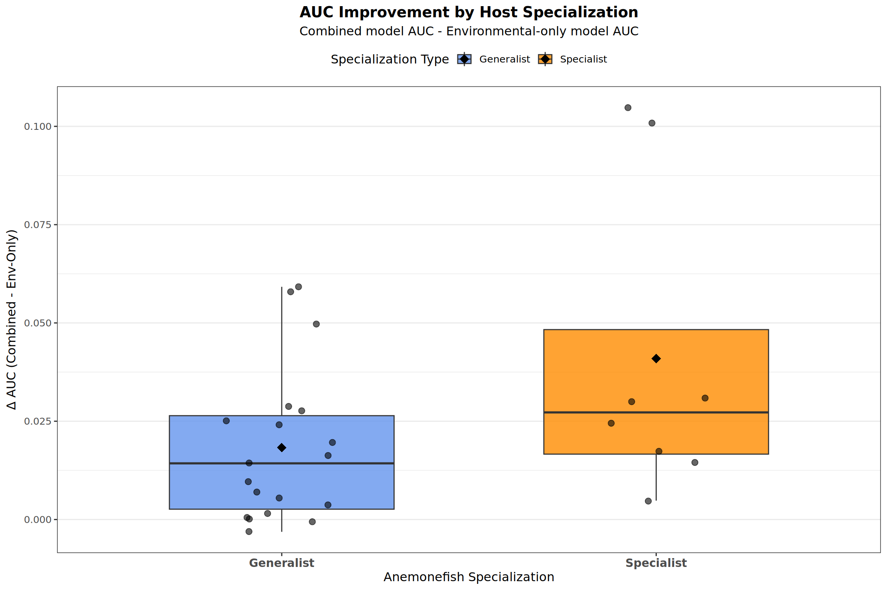
Saved AUC improvement by specialization plot to: /home/bi-server-kyoto/a0236995/sdm_anemonefish/figure_files/auc_improvement_by_specialization.png
# --- Statistical Tests and Plots for TSS Improvement ---if (!is.null(tss_improvement_df) &&nrow(tss_improvement_df) >0&&length(unique(tss_improvement_df$specialization_type[!is.na(tss_improvement_df$specialization_type)])) ==2&&sum(tss_improvement_df$specialization_type =="Generalist", na.rm =TRUE) >1&&sum(tss_improvement_df$specialization_type =="Specialist", na.rm =TRUE) >1) {cat("\n--- Statistical Test for TSS Improvement ---\n") ttest_tss_improvement <-tryCatch({t.test(TSS_improvement ~ specialization_type, data = tss_improvement_df) }, error =function(e) {cat("Error in t-test for TSS improvement:", e$message, "\nAttempting Wilcoxon test.\n")tryCatch({wilcox.test(TSS_improvement ~ specialization_type, data = tss_improvement_df) }, error =function(e2) {cat("Error in Wilcoxon test as well:", e2$message, "\n"); NULL }) })cat("Test for difference in TSS Improvement between Generalist and Specialist Anemonefish (Specialist <=3 hosts):\n")if (!is.null(ttest_tss_improvement)) print(ttest_tss_improvement)# Plot TSS Improvement plot_tss_improvement <-ggplot(tss_improvement_df, aes(x = specialization_type, y = TSS_improvement, fill = specialization_type)) +geom_boxplot(alpha =0.8, width=0.6, outlier.shape =NA) +geom_jitter(width =0.15, alpha =0.6, size=2.5) +stat_summary(fun = mean, geom ="point", shape =18, size =4, color ="black",position =position_dodge(width =0.6)) +labs(title ="TSS Improvement by Host Specialization",subtitle ="Combined model TSS - Environmental-only model TSS",x ="Anemonefish Specialization",y =expression(Delta *" TSS (Combined - Env-Only)")) +scale_fill_manual(values =c("Generalist"="lightcoral", "Specialist"="lightblue"),name ="Specialization Type",na.translate =FALSE) +theme_bw(base_size =12) +theme(legend.position ="top",axis.text.x =element_text(size=11, face="bold"),plot.title =element_text(hjust =0.5, face="bold"),plot.subtitle =element_text(hjust =0.5),panel.grid.major.x =element_blank())print(plot_tss_improvement)# Save TSS improvement plotif (exists("figure_output_dir") &&dir.exists(figure_output_dir)) { tss_improvement_plot_filename <-file.path(figure_output_dir, "tss_improvement_by_specialization.png")ggsave(filename = tss_improvement_plot_filename, plot = plot_tss_improvement, width =8, height =6, units ="in", dpi =300)cat("Saved TSS improvement by specialization plot to:", tss_improvement_plot_filename, "\n") } else {cat("Warning: 'figure_output_dir' not defined or does not exist. TSS improvement plot not saved to file.\n") }} else {cat("Not enough data or distinct groups (Generalist/Specialist with >1 observation each) to perform statistical test or plot on TSS improvement.\n")cat("Number of Generalists with TSS improvement data:", sum(tss_improvement_df$specialization_type =="Generalist", na.rm=TRUE), "\n")cat("Number of Specialists with TSS improvement data:", sum(tss_improvement_df$specialization_type =="Specialist", na.rm=TRUE), "\n")cat("Unique specialization types found in tss_improvement_df:", paste(unique(na.omit(tss_improvement_df$specialization_type)), collapse=", "), "\n")}
--- Statistical Test for TSS Improvement ---
Test for difference in TSS Improvement between Generalist and Specialist Anemonefish (Specialist <=3 hosts):
Welch Two Sample t-test
data: TSS_improvement by specialization_type
t = -1.0896, df = 8.8075, p-value = 0.3048
alternative hypothesis: true difference in means between group Generalist and group Specialist is not equal to 0
95 percent confidence interval:
-0.08035541 0.02822900
sample estimates:
mean in group Generalist mean in group Specialist
0.02177624 0.04783944
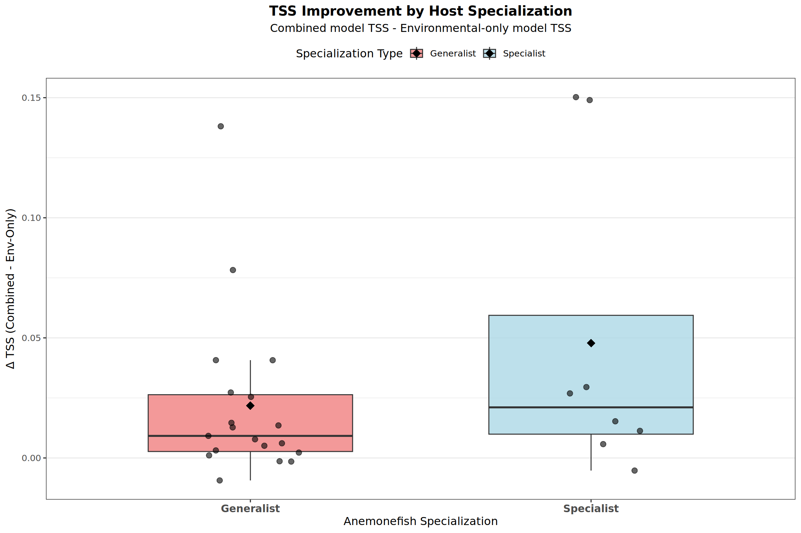
Saved TSS improvement by specialization plot to: /home/bi-server-kyoto/a0236995/sdm_anemonefish/figure_files/tss_improvement_by_specialization.png
Compare anemonefish model performance
This section statistically compares the performance (test AUC) of the different anemonefish model types (environmental-only, biotic-only, combined host+environment) using a linear mixed model. It also visualizes these comparisons.
library(glmmTMB)library(ggplot2)library(dplyr)library(stringr)library(knitr) # For kable# library(performance) # Optional, for model_performance() if needed later# Ensure dplyr, stringr, knitr are loaded if you use them later in the chunk for the summary table# pacman::p_load(dplyr, stringr, knitr) # Or ensure they are loaded in setupif (!is.null(df_fish_comparison) &&nrow(df_fish_comparison) >0&&"AUC_test_CV"%in%names(df_fish_comparison) &&"TSS_test_CV"%in%names(df_fish_comparison)) {# Ensure model_type is a factor for the GLMM# This assumes your df_fish_comparison$model_type has values like "env_only", "biotic_only", "combined_host_env"# OR if you renamed them in a previous step to "env", "host_env", "host_only", adjust levels accordingly.# For consistency with the ant paper structure and direct comparison to env_only: df_fish_comparison$model_type <-factor(df_fish_comparison$model_type, levels =c("env_only", "combined_host_env", "biotic_only"))# Reference: env_only# Second Coeff: combined_host_env vs env_only# Third Coeff: biotic_only vs env_only# --- Statistical Comparison for AUC_test_CV using GLMM ---cat("\n--- Fitting GLMM to compare AUC_test_CV across model types ---\n") m1_fish_auc <-tryCatch({glmmTMB(AUC_test_CV ~ model_type + (1|species), data = df_fish_comparison) }, error =function(e) {cat("Error fitting GLMM for AUC:", e$message, "\n")NULL })if (!is.null(m1_fish_auc)) {cat("\nSummary of GLMM for AUC_test_CV:\n")print(summary(m1_fish_auc)) }# --- Statistical Comparison for TSS_test_CV using GLMM ---cat("\n--- Fitting GLMM to compare TSS_test_CV across model types ---\n") m1_fish_tss <-tryCatch({glmmTMB(TSS_test_CV ~ model_type + (1|species), data = df_fish_comparison) }, error =function(e) {cat("Error fitting GLMM for TSS:", e$message, "\n")NULL })if (!is.null(m1_fish_tss)) {cat("\nSummary of GLMM for TSS_test_CV:\n")print(summary(m1_fish_tss)) }# --- PREPARING DATA FOR PLOTTING --- df_fish_comparison_for_overall_plot <- df_fish_comparison %>%mutate(model_type_display =factor(model_type,levels =c("env_only", "biotic_only", "combined_host_env"), # Order for plot x-axislabels =c("Environmental Only", "Biotic (Host) Only", "Combined (Host+Env)"))) # Labels for plot legend df_fish_comparison_plot_species <- df_fish_comparison %>%mutate(species_display =str_replace(species, "_", " "),model_type_display =factor(model_type, # Ensure consistent factor for plottinglevels =c("env_only", "biotic_only", "combined_host_env"),labels =c("Environmental Only", "Biotic (Host) Only", "Combined (Host+Env)")))# --- Visualization for AUC_test_CV ---cat("\n--- Generating boxplot of AUC_test_CV by model type ---\n") plot_auc_comparison <-ggplot(df_fish_comparison_for_overall_plot, aes(x = model_type_display, y = AUC_test_CV, fill = model_type_display)) +geom_boxplot(alpha =0.7) +stat_summary(fun = mean, geom ="point", shape =18, size =3, color ="black") +labs(title ="Anemonefish Model Performance Comparison (AUC)",x ="Model Type",y ="Test AUC (Predictive Accuracy)" ) +scale_fill_manual(values =c("Environmental Only"="grey70", "Biotic (Host) Only"="skyblue", "Combined (Host+Env)"="salmon"),name ="Model Type" ) +theme_bw(base_size =12) +theme(panel.grid.major.x =element_blank(),panel.grid.minor.y =element_blank(),legend.position ="bottom",axis.text.x =element_text(angle =45, hjust =1) )print(plot_auc_comparison)# Save overall AUC comparison plotif (exists("figure_output_dir") &&dir.exists(figure_output_dir)) { overall_auc_comparison_plot_filename <-file.path(figure_output_dir, "anemonefish_model_auc_comparison_overall.png")ggsave(filename = overall_auc_comparison_plot_filename, plot = plot_auc_comparison, width =8, height =6, units ="in", dpi =300)cat("Saved overall model AUC comparison plot to:", overall_auc_comparison_plot_filename, "\n") } else {cat("Warning: 'figure_output_dir' not defined or does not exist. Overall AUC comparison plot not saved to file.\n") }# Detailed boxplot per species for AUC plot_auc_per_species <-ggplot(df_fish_comparison_plot_species, aes(x = species_display, y = AUC_test_CV, fill = model_type_display)) +geom_boxplot(position =position_dodge(preserve ="single")) +stat_summary(fun = mean, geom ="point", shape =23, size =2, fill ="red", color ="black",position =position_dodge(width =0.75, preserve ="single"), aes(group = model_type_display)) +labs(title ="Anemonefish Model Performance by Species and Type (AUC)",x ="Anemonefish Species",y ="Test AUC (Predictive Accuracy)" ) +scale_fill_manual(values =c("Environmental Only"="grey70", "Biotic (Host) Only"="skyblue", "Combined (Host+Env)"="salmon"),name ="Model Type:" ) +theme_bw(base_size =11) +theme(panel.grid.major.x =element_blank(),panel.grid.minor =element_blank(),legend.position ="top",axis.text.x =element_text(angle =60, hjust =1, size =8), plot.title =element_text(hjust =0.5),plot.subtitle =element_text(hjust =0.5) ) +ylim(0, 1) print(plot_auc_per_species)# Save per-species AUC comparison plotif (exists("figure_output_dir") &&dir.exists(figure_output_dir)) { per_species_auc_comparison_plot_filename <-file.path(figure_output_dir, "anemonefish_model_auc_comparison_per_species.png")ggsave(filename = per_species_auc_comparison_plot_filename, plot = plot_auc_per_species, width =12, height =8, units ="in", dpi =300) # Increased size for better readabilitycat("Saved per-species model AUC comparison plot to:", per_species_auc_comparison_plot_filename, "\n") } else {cat("Warning: 'figure_output_dir' not defined or does not exist. Per-species AUC comparison plot not saved to file.\n") }# --- Visualization for TSS_test_CV ---cat("\n--- Generating boxplot of TSS_test_CV by model type ---\n") plot_tss_comparison <-ggplot(df_fish_comparison_for_overall_plot, aes(x = model_type_display, y = TSS_test_CV, fill = model_type_display)) +geom_boxplot(alpha =0.7) +stat_summary(fun = mean, geom ="point", shape =18, size =3, color ="black") +labs(title ="Anemonefish Model Performance Comparison (TSS)",x ="Model Type",y ="Test TSS (Predictive Accuracy)" ) +scale_fill_manual(values =c("Environmental Only"="grey70", "Biotic (Host) Only"="lightgreen", "Combined (Host+Env)"="purple"), # New colors for TSSname ="Model Type" ) +theme_bw(base_size =12) +theme(panel.grid.major.x =element_blank(),panel.grid.minor.y =element_blank(),legend.position ="bottom",axis.text.x =element_text(angle =45, hjust =1) )print(plot_tss_comparison)# Save overall TSS comparison plotif (exists("figure_output_dir") &&dir.exists(figure_output_dir)) { overall_tss_comparison_plot_filename <-file.path(figure_output_dir, "anemonefish_model_tss_comparison_overall.png")ggsave(filename = overall_tss_comparison_plot_filename, plot = plot_tss_comparison, width =8, height =6, units ="in", dpi =300)cat("Saved overall model TSS comparison plot to:", overall_tss_comparison_plot_filename, "\n") } else {cat("Warning: 'figure_output_dir' not defined or does not exist. Overall TSS comparison plot not saved to file.\n") }# Detailed boxplot per species for TSS plot_tss_per_species <-ggplot(df_fish_comparison_plot_species, aes(x = species_display, y = TSS_test_CV, fill = model_type_display)) +geom_boxplot(position =position_dodge(preserve ="single")) +stat_summary(fun = mean, geom ="point", shape =23, size =2, fill ="red", color ="black",position =position_dodge(width =0.75, preserve ="single"), aes(group = model_type_display)) +labs(title ="Anemonefish Model Performance by Species and Type (TSS)",x ="Anemonefish Species",y ="Test TSS (Predictive Accuracy)" ) +scale_fill_manual(values =c("Environmental Only"="grey70", "Biotic (Host) Only"="lightgreen", "Combined (Host+Env)"="purple"), # New colors for TSSname ="Model Type:" ) +theme_bw(base_size =11) +theme(panel.grid.major.x =element_blank(),panel.grid.minor =element_blank(),legend.position ="top",axis.text.x =element_text(angle =60, hjust =1, size =8), plot.title =element_text(hjust =0.5),plot.subtitle =element_text(hjust =0.5) ) +ylim(0, 1) # TSS can also range from -1 to 1, but typically 0-1 for good modelsprint(plot_tss_per_species)# Save per-species TSS comparison plotif (exists("figure_output_dir") &&dir.exists(figure_output_dir)) { per_species_tss_comparison_plot_filename <-file.path(figure_output_dir, "anemonefish_model_tss_comparison_per_species.png")ggsave(filename = per_species_tss_comparison_plot_filename, plot = plot_tss_per_species, width =12, height =8, units ="in", dpi =300) # Increased size for better readabilitycat("Saved per-species model TSS comparison plot to:", per_species_tss_comparison_plot_filename, "\n") } else {cat("Warning: 'figure_output_dir' not defined or does not exist. Per-species TSS comparison plot not saved to file.\n") }# --- Summary Table for AUC ---cat("\n--- Mean and Standard Deviation of Test AUC per Anemonefish Species and Model Type ---\n") anemonefish_auc_summary_table <- df_fish_comparison %>%group_by(species, model_type) %>% dplyr::summarize(mean_AUC_test =mean(AUC_test_CV, na.rm =TRUE),sd_AUC_test =sd(AUC_test_CV, na.rm =TRUE),n_CV_folds =n(), .groups ='drop' ) %>%mutate(species_display = stringr::str_replace(species, "_", " ")) %>% dplyr::select(Species = species_display, Model_Type = model_type, Mean_AUC = mean_AUC_test, SD_AUC = sd_AUC_test, N_Folds = n_CV_folds) %>%mutate(Mean_AUC =round(Mean_AUC, 3),SD_AUC =round(SD_AUC, 3)) %>%arrange(Species, Model_Type)if (requireNamespace("knitr", quietly =TRUE) &&nrow(anemonefish_auc_summary_table) >0) {print(knitr::kable(anemonefish_auc_summary_table, caption ="Mean and Standard Deviation of Test AUC for Anemonefish Models by Species and Type.")) } elseif (nrow(anemonefish_auc_summary_table) >0) {print(anemonefish_auc_summary_table) } else {cat("No summary data to print for anemonefish AUC.\n") }# Save AUC summary table to CSVif (exists("analysis_output_dir") &&dir.exists(analysis_output_dir)) { anemonefish_cv_summary_auc_path <-file.path(analysis_output_dir, "anemonefish_detailed_CV_summary_auc.csv")write.csv(anemonefish_auc_summary_table, anemonefish_cv_summary_auc_path, row.names =FALSE)cat("\nAnemonefish detailed CV summary (Mean & SD AUC) saved to:", anemonefish_cv_summary_auc_path, "\n") } else {cat("\nWarning: 'analysis_output_dir' not defined. Anemonefish detailed CV summary (AUC) not saved to CSV.\n") }# --- Summary Table for TSS ---cat("\n--- Mean and Standard Deviation of Test TSS per Anemonefish Species and Model Type ---\n") anemonefish_tss_summary_table <- df_fish_comparison %>%group_by(species, model_type) %>% dplyr::summarize(mean_TSS_test =mean(TSS_test_CV, na.rm =TRUE), # Use TSS_test_CVsd_TSS_test =sd(TSS_test_CV, na.rm =TRUE), # Use TSS_test_CVn_CV_folds =n(), .groups ='drop' ) %>%mutate(species_display = stringr::str_replace(species, "_", " ")) %>% dplyr::select(Species = species_display, Model_Type = model_type, Mean_TSS = mean_TSS_test, SD_TSS = sd_TSS_test, N_Folds = n_CV_folds) %>%# Rename columns for TSSmutate(Mean_TSS =round(Mean_TSS, 3),SD_TSS =round(SD_TSS, 3)) %>%arrange(Species, Model_Type)if (requireNamespace("knitr", quietly =TRUE) &&nrow(anemonefish_tss_summary_table) >0) {print(knitr::kable(anemonefish_tss_summary_table, caption ="Mean and Standard Deviation of Test TSS for Anemonefish Models by Species and Type.")) } elseif (nrow(anemonefish_tss_summary_table) >0) {print(anemonefish_tss_summary_table) } else {cat("No summary data to print for anemonefish TSS.\n") }# Save TSS summary table to CSVif (exists("analysis_output_dir") &&dir.exists(analysis_output_dir)) { anemonefish_cv_summary_tss_path <-file.path(analysis_output_dir, "anemonefish_detailed_CV_summary_tss.csv")write.csv(anemonefish_tss_summary_table, anemonefish_cv_summary_tss_path, row.names =FALSE)cat("\nAnemonefish detailed CV summary (Mean & SD TSS) saved to:", anemonefish_cv_summary_tss_path, "\n") } else {cat("\nWarning: 'analysis_output_dir' not defined. Anemonefish detailed CV summary (TSS) not saved to CSV.\n") }} else {cat("Skipping model comparison as 'df_fish_comparison' is empty or required CV columns (AUC_test_CV, TSS_test_CV) are missing.\n")}
--- Fitting GLMM to compare AUC_test_CV across model types ---
Summary of GLMM for AUC_test_CV:
Family: gaussian ( identity )
Formula: AUC_test_CV ~ model_type + (1 | species)
Data: df_fish_comparison
AIC BIC logLik -2*log(L) df.resid
-3805.3 -3779.7 1907.6 -3815.3 1220
Random effects:
Conditional model:
Groups Name Variance Std.Dev.
species (Intercept) 0.007504 0.08663
Residual 0.002332 0.04830
Number of obs: 1225, groups: species, 27
Dispersion estimate for gaussian family (sigma^2): 0.00233
Conditional model:
Estimate Std. Error z value Pr(>|z|)
(Intercept) 0.894265 0.016873 53.00 < 2e-16 ***
model_typecombined_host_env 0.021677 0.003407 6.36 1.99e-10 ***
model_typebiotic_only -0.012437 0.003395 -3.66 0.000249 ***
---
Signif. codes: 0 '***' 0.001 '**' 0.01 '*' 0.05 '.' 0.1 ' ' 1
--- Fitting GLMM to compare TSS_test_CV across model types ---
Summary of GLMM for TSS_test_CV:
Family: gaussian ( identity )
Formula: TSS_test_CV ~ model_type + (1 | species)
Data: df_fish_comparison
AIC BIC logLik -2*log(L) df.resid
-2609.4 -2583.8 1309.7 -2619.4 1220
Random effects:
Conditional model:
Groups Name Variance Std.Dev.
species (Intercept) 0.008527 0.09234
Residual 0.006309 0.07943
Number of obs: 1225, groups: species, 27
Dispersion estimate for gaussian family (sigma^2): 0.00631
Conditional model:
Estimate Std. Error z value Pr(>|z|)
(Intercept) 0.765913 0.018272 41.92 < 2e-16 ***
model_typecombined_host_env 0.024375 0.005603 4.35 1.36e-05 ***
model_typebiotic_only -0.031895 0.005583 -5.71 1.11e-08 ***
---
Signif. codes: 0 '***' 0.001 '**' 0.01 '*' 0.05 '.' 0.1 ' ' 1
--- Generating boxplot of AUC_test_CV by model type ---
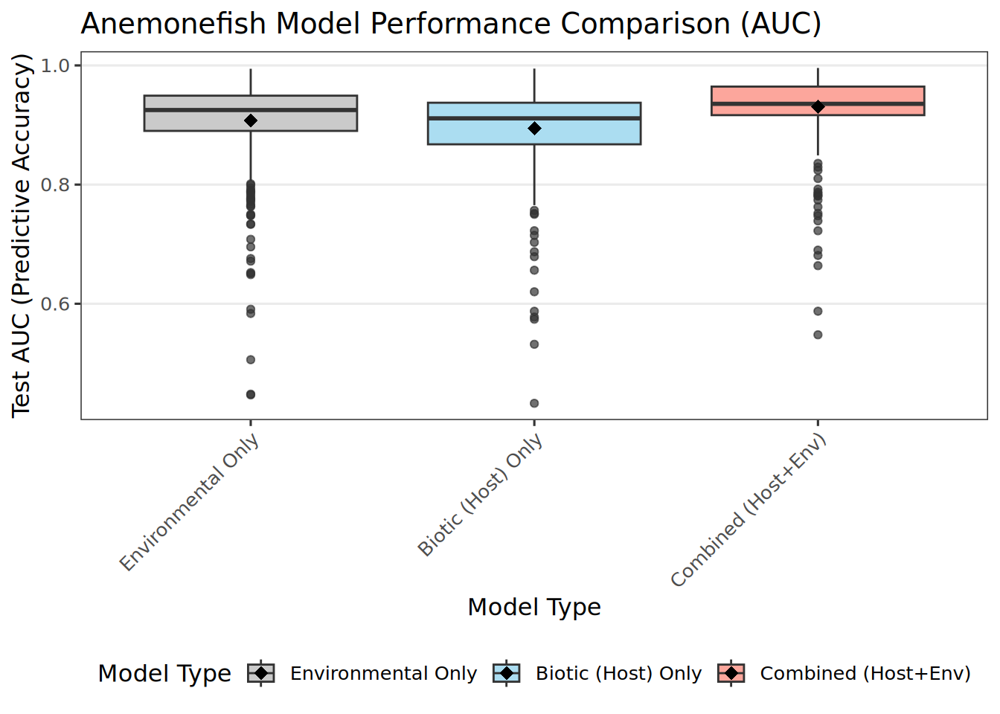
Saved overall model AUC comparison plot to: /home/bi-server-kyoto/a0236995/sdm_anemonefish/figure_files/anemonefish_model_auc_comparison_overall.png
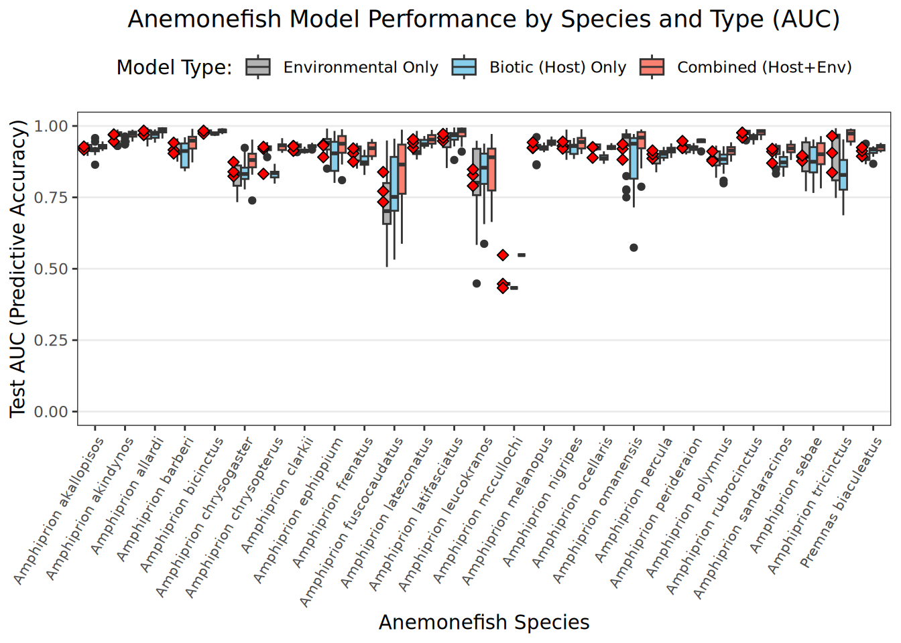
Saved per-species model AUC comparison plot to: /home/bi-server-kyoto/a0236995/sdm_anemonefish/figure_files/anemonefish_model_auc_comparison_per_species.png
--- Generating boxplot of TSS_test_CV by model type ---
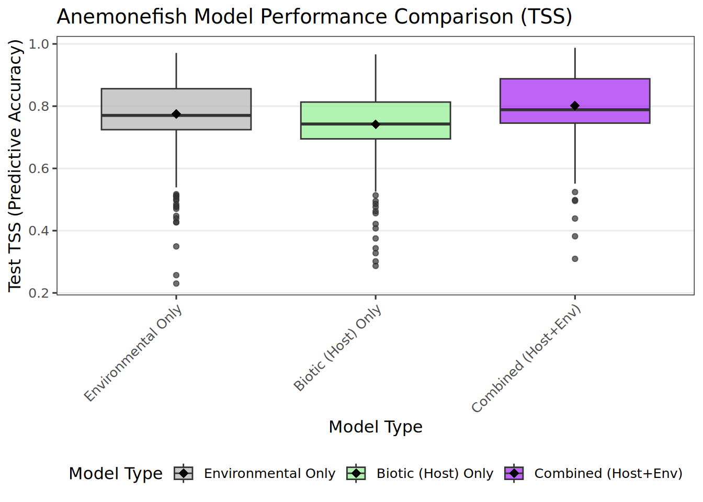
Saved overall model TSS comparison plot to: /home/bi-server-kyoto/a0236995/sdm_anemonefish/figure_files/anemonefish_model_tss_comparison_overall.png
Species-Specific Anemonefish Model Performance Comparison
This section performs a model comparison (environmental-only vs. biotic-only vs. combined) for each anemonefish species individually. For each species, an ANOVA is used to test for significant differences in mean Test AUC values across the model types, followed by Tukey’s HSD post-hoc tests if the ANOVA is significant. Boxplots illustrate these comparisons for each species.
# # Ensure df_fish_comparison is available from the previous chunk# if (!is.null(df_fish_comparison) && nrow(df_fish_comparison) > 0 &&# "AUC_test_CV" %in% names(df_fish_comparison) && "TSS_test_CV" %in% names(df_fish_comparison)) {# # # Create a working version of the dataframe with a cleaned species column for this specific analysis.# # This avoids modifying the original df_fish_comparison if it's used later in its original state.# # It also handles cases where species names might have .csv suffixes.# df_fish_comparison_for_species_analysis <- df_fish_comparison %>%# mutate(species_cleaned_for_loop = stringr::str_remove(species, "\\.csv$")) # Remove .csv suffix# # # Get unique cleaned species names for the loop# all_anemonefish_species_for_loop <- unique(df_fish_comparison_for_species_analysis$species_cleaned_for_loop)# cat("\nPerforming species-specific model performance comparisons for anemonefish...\n")# # # Loop through each unique anemonefish species# for (current_species_name_sanitized in all_anemonefish_species_for_loop) {# # # Create a more readable species name for output# current_species_display_name <- gsub("_", " ", current_species_name_sanitized)# # cat("\n\n---\n") # Horizontal rule for separation in output# cat(paste0("### Statistical Comparison for: *", current_species_display_name, "*\n")) # Markdown sub-header# # # Subset data for the current species# species_data_subset <- df_fish_comparison %>%# filter(species == current_species_name_sanitized) %>%# mutate(model_type = factor(model_type,# levels = c("env_only", "biotic_only", "combined_host_env"))) # Ensure factor levels# # # Check if there's enough data to proceed for either AUC or TSS# if (nrow(species_data_subset) < 3 || length(unique(species_data_subset$model_type)) < 2) {# cat(paste0("Not enough data or distinct model types for ", current_species_display_name, " to perform comparison. Skipping.\n"))# next# }# # # Check for sufficient replicates per model type# replicates_summary <- species_data_subset %>%# group_by(model_type) %>%# summarise(n_runs = n(), .groups = 'drop')# # cat("\nNumber of runs per model type:\n")# print(knitr::kable(replicates_summary, caption = paste("Replicates for", current_species_display_name)))# # if (any(replicates_summary$n_runs < 2) && length(unique(replicates_summary$model_type)) > 1) {# cat(paste0("\n*Warning: At least one model type for ", current_species_display_name, " has fewer than 2 replicate runs. Statistical test results may not be robust.*\n"))# }# if (length(unique(replicates_summary$model_type[replicates_summary$n_runs > 0])) < 2) { # Check model types with actual data# cat(paste0("\n*Warning: ", current_species_display_name, " does not have at least two different model types with data. Skipping statistical tests for this species.*\n"))# next# }# # # --- Statistical Comparison using ANOVA for AUC_test_CV ---# cat("\n**ANOVA: Test AUC vs. Model Type**\n")# # # Check if AUC_test_CV has any variance for this species# if (length(unique(na.omit(species_data_subset$AUC_test_CV))) < 2) {# cat(paste0("AUC_test_CV values are constant (or all NA) for ", current_species_display_name, ". Skipping ANOVA.\n"))# } else {# anova_model_species_auc <- tryCatch({# aov(AUC_test_CV ~ model_type, data = species_data_subset)# }, error = function(e) {# cat(paste0("Error performing ANOVA for AUC for ", current_species_display_name, ": ", e$message, "\n"))# NULL# })# # if (!is.null(anova_model_species_auc)) {# # Print ANOVA summary# print(summary(anova_model_species_auc))# # # Perform Tukey's HSD for pairwise comparisons if ANOVA is significant# anova_summary_table_auc <- summary(anova_model_species_auc)[[1]] # This is a list containing the table# p_value_from_anova_auc <- anova_summary_table_auc$"Pr(>F)"[1] # Get the p-value for model_type# # if (!is.na(p_value_from_anova_auc) && p_value_from_anova_auc < 0.05) {# cat("\n**Tukey's HSD Post-Hoc Test (Pairwise Comparisons) for AUC**\n")# tukey_hsd_results_auc <- TukeyHSD(anova_model_species_auc)# print(tukey_hsd_results_auc)# } else {# if (!is.na(p_value_from_anova_auc)) {# cat(paste0("\nANOVA for AUC model_type not significant (p = ", round(p_value_from_anova_auc, 4), "), skipping Tukey's HSD for AUC.\n"))# } else {# cat("\nCould not determine AUC ANOVA significance, skipping Tukey's HSD for AUC.\n")# }# }# }# }# # # --- Statistical Comparison using ANOVA for TSS_test_CV ---# cat("\n**ANOVA: Test TSS vs. Model Type**\n")# # # Check if TSS_test_CV has any variance for this species# if (length(unique(na.omit(species_data_subset$TSS_test_CV))) < 2) {# cat(paste0("TSS_test_CV values are constant (or all NA) for ", current_species_display_name, ". Skipping ANOVA.\n"))# } else {# anova_model_species_tss <- tryCatch({# aov(TSS_test_CV ~ model_type, data = species_data_subset)# }, error = function(e) {# cat(paste0("Error performing ANOVA for TSS for ", current_species_display_name, ": ", e$message, "\n"))# NULL# })# # if (!is.null(anova_model_species_tss)) {# # Print ANOVA summary# print(summary(anova_model_species_tss))# # # Perform Tukey's HSD for pairwise comparisons if ANOVA is significant# anova_summary_table_tss <- summary(anova_model_species_tss)[[1]]# p_value_from_anova_tss <- anova_summary_table_tss$"Pr(>F)"[1]# # if (!is.na(p_value_from_anova_tss) && p_value_from_anova_tss < 0.05) {# cat("\n**Tukey's HSD Post-Hoc Test (Pairwise Comparisons) for TSS**\n")# tukey_hsd_results_tss <- TukeyHSD(anova_model_species_tss)# print(tukey_hsd_results_tss)# } else {# if (!is.na(p_value_from_anova_tss)) {# cat(paste0("\nANOVA for TSS model_type not significant (p = ", round(p_value_from_anova_tss, 4), "), skipping Tukey's HSD for TSS.\n"))# } else {# cat("\nCould not determine TSS ANOVA significance, skipping Tukey's HSD for TSS.\n")# }# }# }# }# # # --- Visualization for AUC_test_CV for the current species ---# # # Determine dynamic y-axis limits, ensuring they are sensible for AUC# min_auc_val <- min(species_data_subset$AUC_test_CV, na.rm = TRUE)# max_auc_val <- max(species_data_subset$AUC_test_CV, na.rm = TRUE)# y_lower_limit_auc <- max(0, min(0.4, min_auc_val - 0.05)) # Not below 0, and give some space# y_upper_limit_auc <- min(1, max_auc_val + 0.05) # Not above 1, and give some space# if (is.infinite(y_lower_limit_auc) || is.infinite(y_upper_limit_auc) || y_lower_limit_auc >= y_upper_limit_auc) {# y_lower_limit_auc <- 0.4# y_upper_limit_auc <- 1.0# }# # plot_auc_species_specific <- ggplot(species_data_subset, aes(x = model_type, y = AUC_test_CV, fill = model_type)) +# geom_boxplot(alpha = 0.7, outlier.shape = NA) + # Hiding default outliers as geom_jitter shows all points# geom_jitter(width = 0.15, alpha = 0.6, height = 0, size = 1.5) + # Show individual run points# stat_summary(fun = mean, geom = "point", shape = 23, size = 3, fill = "white", color="black", # Diamond for mean# position = position_dodge(width = 0.75)) +# labs(# title = paste("Model Performance (Test AUC) for", current_species_display_name),# x = "Model Type",# y = "Test AUC Score"# ) +# scale_fill_manual(# values = c("env_only" = "grey70", "biotic_only" = "skyblue", "combined_host_env" = "salmon"),# name = "Model Type:",# labels = c("Environmental Only", "Biotic (Host) Only", "Combined (Host+Env)")# ) +# theme_bw(base_size = 11) +# theme(# legend.position = "top",# axis.text.x = element_text(angle = 45, hjust = 1, size = 9),# plot.title = element_text(size = 13, hjust = 0.5),# panel.grid.minor = element_blank()# ) +# coord_cartesian(ylim = c(y_lower_limit_auc, y_upper_limit_auc)) # Apply dynamic y-limits# # species_specific_auc_figure_output_dir <- paste0(figure_output_dir, "/AUC_boxplots")# # if (!dir.exists(species_specific_auc_figure_output_dir)) {# dir.create(species_specific_auc_figure_output_dir, recursive = TRUE)# cat("Created directory for AUC figures at:", species_specific_auc_figure_output_dir, "\n")# }# # # Define filename for AUC plot# auc_plot_filename <- file.path(species_specific_auc_figure_output_dir, paste0("AUC_boxplot_", current_species_name_sanitized, ".png"))# # # Save AUC plot using ggsave for better quality control# ggsave(filename = auc_plot_filename, plot = plot_auc_species_specific,# width = 7, height = 5.5, units = "in", dpi = 300)# cat("Saved species specific AUC plot to:", auc_plot_filename, "\n")# # print(plot_auc_species_specific)# # # --- Visualization for TSS_test_CV for the current species ---# # # Determine dynamic y-axis limits, ensuring they are sensible for TSS# min_tss_val <- min(species_data_subset$TSS_test_CV, na.rm = TRUE)# max_tss_val <- max(species_data_subset$TSS_test_CV, na.rm = TRUE)# y_lower_limit_tss <- max(0, min(0.1, min_tss_val - 0.05)) # Not below 0, and give some space (TSS can be low)# y_upper_limit_tss <- min(1, max_tss_val + 0.05) # Not above 1, and give some space# if (is.infinite(y_lower_limit_tss) || is.infinite(y_upper_limit_tss) || y_lower_limit_tss >= y_upper_limit_tss) {# y_lower_limit_tss <- 0.1# y_upper_limit_tss <- 1.0# }# # # plot_tss_species_specific <- ggplot(species_data_subset, aes(x = model_type, y = TSS_test_CV, fill = model_type)) +# geom_boxplot(alpha = 0.7, outlier.shape = NA) +# geom_jitter(width = 0.15, alpha = 0.6, height = 0, size = 1.5) +# stat_summary(fun = mean, geom = "point", shape = 23, size = 3, fill = "white", color="black",# position = position_dodge(width = 0.75)) +# labs(# title = paste("Model Performance (Test TSS) for", current_species_display_name),# x = "Model Type",# y = "Test TSS Score"# ) +# scale_fill_manual(# values = c("env_only" = "grey70", "biotic_only" = "lightgreen", "combined_host_env" = "purple"), # Different colors for TSS# name = "Model Type:",# labels = c("Environmental Only", "Biotic (Host) Only", "Combined (Host+Env)")# ) +# theme_bw(base_size = 11) +# theme(# legend.position = "top",# axis.text.x = element_text(angle = 45, hjust = 1, size = 9),# plot.title = element_text(size = 13, hjust = 0.5),# panel.grid.minor = element_blank()# ) +# coord_cartesian(ylim = c(y_lower_limit_tss, y_upper_limit_tss)) # Apply dynamic y-limits# # species_specific_tss_figure_output_dir <- paste0(figure_output_dir, "/TSS_boxplots")# # if (!dir.exists(species_specific_tss_figure_output_dir)) {# dir.create(species_specific_tss_figure_output_dir, recursive = TRUE)# cat("Created directory for TSS figures at:", species_specific_tss_figure_output_dir, "\n")# }# # # Define filename for TSS plot# tss_plot_filename <- file.path(species_specific_tss_figure_output_dir, paste0("TSS_boxplot_", current_species_name_sanitized, ".png"))# # # Save TSS plot using ggsave# ggsave(filename = tss_plot_filename, plot = plot_tss_species_specific,# width = 7, height = 5.5, units = "in", dpi = 300)# cat("Saved species specific TSS plot to:", tss_plot_filename, "\n")# # print(plot_tss_species_specific)# # } # End loop through species# # } else {# cat("\nSkipping species-specific anemonefish model comparison as 'df_fish_comparison' is not available, empty, or 'AUC_test_CV' or 'TSS_test_CV' columns are missing.\n")# }
Current Environmental Predictors (PCA)
This section loads the Principal Component Analysis (PCA) rasters for the current environmental conditions. These PCA rasters were generated by script 05_preprocess_env_pca_only.R (if PCA was used) and represent the primary environmental gradients used in the SDMs.
if (config$use_pca_predictors) {cat("--- Loading Current Environmental PCA Rasters ---\n")# The rds file stores a list of paths, one for each scenario's PCA .tif fileif (!file.exists(config$pca_raster_paths_rds_path)) {stop("PCA raster paths RDS file not found: ", config$pca_raster_paths_rds_path, "\nPlease ensure script 05 (PCA preprocessing) ran successfully.") } all_pca_raster_paths <-readRDS(config$pca_raster_paths_rds_path) current_pca_path <- all_pca_raster_paths[["current"]]if (is.null(current_pca_path) ||!file.exists(current_pca_path)) {stop("Path for 'current' PCA raster not found in RDS or file does not exist: ", current_pca_path %||%"NULL") } env_pca_current <-tryCatch({ terra::rast(current_pca_path) }, error =function(e) {cat("Error loading current PCA raster from:", current_pca_path, "\nError:", e$message, "\n")NULL })if (!is.null(env_pca_current)) {names(env_pca_current) <-paste0("Current Environmental PC", 1:terra::nlyr(env_pca_current)) # Ensure standard namescat("Loaded current environmental PCA rasters. Layers:", paste(names(env_pca_current), collapse=", "), "\n")# Crop if configured (should match how other current rasters were handled)if (config$apply_indo_pacific_crop) { ip_extent <- terra::ext(config$indo_pacific_bbox) env_pca_current_cropped <- terra::crop(env_pca_current, ip_extent)plot(env_pca_current_cropped) } else { env_pca_current_cropped <- env_pca_current # Use uncropped if not configuredplot(env_pca_current_cropped) } } else {cat("Error: Could not load current environmental PCA rasters.\n") env_pca_current_cropped <-NULL }} else {cat("--- PCA predictors not used. Skipping loading of current PCA rasters. ---\n")cat(" You might need to load your VIF-selected current environmental rasters here if needed for specific analyses.\n") env_pca_current_cropped <-NULL# Ensure this object exists as NULL if PCA not used}
--- Loading Current Environmental PCA Rasters ---
Loaded current environmental PCA rasters. Layers: Current Environmental PC1, Current Environmental PC2, Current Environmental PC3, Current Environmental PC4
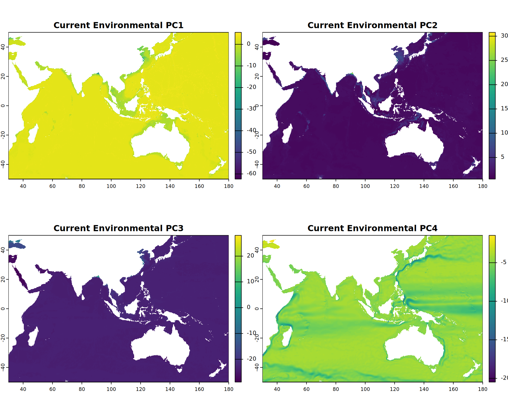
Future Species Richness Projections
This section loads the predicted future suitability rasters for host sea anemones and anemonefish (from environmental-only models) for each future scenario and time step, and calculates the summed richness.
# Define the future scenarios and time steps from your config# Your config$env_scenarios already includes "current", so we filter that outfuture_scenarios_to_load <- config$env_scenarios[config$env_scenarios !="current"]if (length(future_scenarios_to_load) ==0) {cat("No future scenarios defined in config$env_scenarios to load predictions for.\n")}# Lists to store the summed richness rasters for each future scenariohost_richness_future_list <-list()fish_richness_future_list <-list() # For env-only fish models# --- Create subdirectory for these specific future richness maps ---# This assumes figure_output_dir is defined in your setup chunkfuture_richness_maps_subdir <-NULLif (exists("figure_output_dir") &&dir.exists(figure_output_dir)) { future_richness_maps_subdir <-file.path(figure_output_dir, "future_richness_projections")if (!dir.exists(future_richness_maps_subdir)) {dir.create(future_richness_maps_subdir, recursive =TRUE)cat("Created subdirectory for future richness maps at:", future_richness_maps_subdir, "\n") }} else {cat("Warning: 'figure_output_dir' not defined or does not exist. Future richness maps will not be saved to file.\n")}predictor_suffix_anemone <-"_pca"predictor_suffix <-"_combined_pca"# Loop through each future scenariofor (scenario_name in future_scenarios_to_load) {cat("\n--- Processing Future Scenario:", scenario_name, "---\n")# --- 1. Load Host Sea Anemone Future Predictions ---cat(" Loading Host Sea Anemone predictions for", scenario_name, "\n") host_future_raster_files <-c()# Assuming anemone_species_df and predictor_suffix are defined from a previous chunkfor (i in1:nrow(anemone_species_df)) { sp_name_sanitized <-gsub(" ", "_", anemone_species_df$scientificName[i]) pred_file_path <-construct_mean_prediction_filename(species_name_sanitized = sp_name_sanitized,scenario_name = scenario_name,predictor_type_suffix = predictor_suffix_anemone, config = config )if (file.exists(pred_file_path)) { host_future_raster_files <-c(host_future_raster_files, pred_file_path) } else {cat(" Warning: Host prediction file not found for", sp_name_sanitized, "in", scenario_name, "at", pred_file_path, "\n") } }if (length(host_future_raster_files) >0) { host_pred_stack_future <- terra::rast(host_future_raster_files) host_richness_sum_future <-sum(host_pred_stack_future, na.rm =TRUE)if (config$apply_indo_pacific_crop) { ip_extent <- terra::ext(config$indo_pacific_bbox) host_richness_future_list[[scenario_name]] <- terra::crop(host_richness_sum_future, ip_extent) } else { host_richness_future_list[[scenario_name]] <- host_richness_sum_future }cat(" Processed host anemone richness for", scenario_name, "\n") } else {cat(" Warning: No host prediction files found for scenario", scenario_name, "\n") host_richness_future_list[[scenario_name]] <-NULL# Ensure it's NULL if no data }# --- 2. Load Anemonefish (Environmental-Only) Future Predictions ---cat(" Loading Anemonefish (Env-Only) predictions for", scenario_name, "\n") fish_future_raster_files <-c()# Assuming anemonefish_species_df and predictor_suffix are definedfor (i in1:nrow(anemonefish_species_df)) { sp_name_sanitized <-gsub(" ", "_", anemonefish_species_df$scientificName[i]) pred_file_path <-construct_mean_prediction_filename(species_name_sanitized = sp_name_sanitized,scenario_name = scenario_name,predictor_type_suffix = predictor_suffix, config = config )if (file.exists(pred_file_path)) { fish_future_raster_files <-c(fish_future_raster_files, pred_file_path) } else {cat(" Warning: Anemonefish (env-only) prediction file not found for", sp_name_sanitized, "in", scenario_name, "at", pred_file_path, "\n") } }if (length(fish_future_raster_files) >0) { fish_pred_stack_future <- terra::rast(fish_future_raster_files) fish_richness_sum_future <-sum(fish_pred_stack_future, na.rm =TRUE)if (config$apply_indo_pacific_crop) { ip_extent <- terra::ext(config$indo_pacific_bbox) fish_richness_future_list[[scenario_name]] <- terra::crop(fish_richness_sum_future, ip_extent) } else { fish_richness_future_list[[scenario_name]] <- fish_richness_sum_future }cat(" Processed anemonefish (env-only) richness for", scenario_name, "\n") } else {cat(" Warning: No anemonefish (env-only) prediction files found for scenario", scenario_name, "\n") fish_richness_future_list[[scenario_name]] <-NULL# Ensure it's NULL }} # End loop through future scenarios
--- Processing Future Scenario: ssp119_2050 ---
Loading Host Sea Anemone predictions for ssp119_2050
Processed host anemone richness for ssp119_2050
Loading Anemonefish (Env-Only) predictions for ssp119_2050
Warning: Anemonefish (env-only) prediction file not found for Amphiprion_chagosensis in ssp119_2050 at /home/bi-server-kyoto/a0236995/sdm_anemonefish/data/output/predictions/Future/ssp119/1-pred_Amphiprion_chagosensis_ssp119_dec50_combined_pca.tif
Warning: Anemonefish (env-only) prediction file not found for Amphiprion_mccullochi in ssp119_2050 at /home/bi-server-kyoto/a0236995/sdm_anemonefish/data/output/predictions/Future/ssp119/1-pred_Amphiprion_mccullochi_ssp119_dec50_combined_pca.tif
Warning: Anemonefish (env-only) prediction file not found for Amphiprion_pacificus in ssp119_2050 at /home/bi-server-kyoto/a0236995/sdm_anemonefish/data/output/predictions/Future/ssp119/1-pred_Amphiprion_pacificus_ssp119_dec50_combined_pca.tif
Processed anemonefish (env-only) richness for ssp119_2050
--- Processing Future Scenario: ssp119_2100 ---
Loading Host Sea Anemone predictions for ssp119_2100
Processed host anemone richness for ssp119_2100
Loading Anemonefish (Env-Only) predictions for ssp119_2100
Warning: Anemonefish (env-only) prediction file not found for Amphiprion_chagosensis in ssp119_2100 at /home/bi-server-kyoto/a0236995/sdm_anemonefish/data/output/predictions/Future/ssp119/1-pred_Amphiprion_chagosensis_ssp119_dec100_combined_pca.tif
Warning: Anemonefish (env-only) prediction file not found for Amphiprion_mccullochi in ssp119_2100 at /home/bi-server-kyoto/a0236995/sdm_anemonefish/data/output/predictions/Future/ssp119/1-pred_Amphiprion_mccullochi_ssp119_dec100_combined_pca.tif
Warning: Anemonefish (env-only) prediction file not found for Amphiprion_pacificus in ssp119_2100 at /home/bi-server-kyoto/a0236995/sdm_anemonefish/data/output/predictions/Future/ssp119/1-pred_Amphiprion_pacificus_ssp119_dec100_combined_pca.tif
Processed anemonefish (env-only) richness for ssp119_2100
--- Processing Future Scenario: ssp585_2050 ---
Loading Host Sea Anemone predictions for ssp585_2050
Processed host anemone richness for ssp585_2050
Loading Anemonefish (Env-Only) predictions for ssp585_2050
Warning: Anemonefish (env-only) prediction file not found for Amphiprion_chagosensis in ssp585_2050 at /home/bi-server-kyoto/a0236995/sdm_anemonefish/data/output/predictions/Future/ssp585/1-pred_Amphiprion_chagosensis_ssp585_dec50_combined_pca.tif
Warning: Anemonefish (env-only) prediction file not found for Amphiprion_mccullochi in ssp585_2050 at /home/bi-server-kyoto/a0236995/sdm_anemonefish/data/output/predictions/Future/ssp585/1-pred_Amphiprion_mccullochi_ssp585_dec50_combined_pca.tif
Warning: Anemonefish (env-only) prediction file not found for Amphiprion_pacificus in ssp585_2050 at /home/bi-server-kyoto/a0236995/sdm_anemonefish/data/output/predictions/Future/ssp585/1-pred_Amphiprion_pacificus_ssp585_dec50_combined_pca.tif
Processed anemonefish (env-only) richness for ssp585_2050
--- Processing Future Scenario: ssp585_2100 ---
Loading Host Sea Anemone predictions for ssp585_2100
Processed host anemone richness for ssp585_2100
Loading Anemonefish (Env-Only) predictions for ssp585_2100
Warning: Anemonefish (env-only) prediction file not found for Amphiprion_chagosensis in ssp585_2100 at /home/bi-server-kyoto/a0236995/sdm_anemonefish/data/output/predictions/Future/ssp585/1-pred_Amphiprion_chagosensis_ssp585_dec100_combined_pca.tif
Warning: Anemonefish (env-only) prediction file not found for Amphiprion_mccullochi in ssp585_2100 at /home/bi-server-kyoto/a0236995/sdm_anemonefish/data/output/predictions/Future/ssp585/1-pred_Amphiprion_mccullochi_ssp585_dec100_combined_pca.tif
Warning: Anemonefish (env-only) prediction file not found for Amphiprion_pacificus in ssp585_2100 at /home/bi-server-kyoto/a0236995/sdm_anemonefish/data/output/predictions/Future/ssp585/1-pred_Amphiprion_pacificus_ssp585_dec100_combined_pca.tif
Processed anemonefish (env-only) richness for ssp585_2100
cat("\n--- Future species prediction loading and processing finished. ---\n")
--- Future species prediction loading and processing finished. ---
# --- Final Plots Comparison and Saving ---cat("\n--- Generating and Saving Final Richness Comparison Plots ---\n")
--- Generating and Saving Final Richness Comparison Plots ---
# Define plot parameters (no longer needed by the helper, but kept for reference)png_width_map <-1000png_height_map <-750png_res_map <-100# MODIFIED Helper function to use the new ggplot-based plotting functionplot_and_save_richness_map <-function(raster_obj, main_title, filename_base, subdir) {if (!is.null(raster_obj)) {# --- Normalization for consistent color scale --- max_val <-global(raster_obj, "max", na.rm =TRUE)$max# Handle case where raster is all 0s or NAs richness_normalized <-if(!is.na(max_val) && max_val >0) raster_obj / max_val else raster_obj# --- Create plot using the ggplot function ---# This assumes `plot_prediction_map` and `world_map_sf` are defined in a previous chunk the_plot <-plot_prediction_map(prediction_raster = richness_normalized,species_name = main_title,world_basemap = world_map_sf )# --- Display plot in RMarkdown output ---print(the_plot)# --- Save the plot to file ---# This keeps your original file naming and location logicif (!is.null(subdir) &&dir.exists(subdir)) {# We add "_ggplot" to the filename to distinguish from potential old plots plot_filename <-file.path(subdir, paste0(filename_base, "_ggplot.png"))# Use ggsave for ggplot objectsggsave(plot_filename, plot = the_plot, width =10, height =7, dpi =300, bg ="white")cat(" Plot saved to:", plot_filename, "\n") } else {cat(" Warning: Output subdirectory '", subdir, "' for plot '", filename_base, "' not available. Plot not saved to file.\n") } } else {cat(" Skipping plot for '", main_title, "' as raster object is NULL.\n") }}# Plot current richness maps first (assuming host_richness_sum_cropped and fish_richness_sum_cropped are from a previous chunk)if(exists("host_richness_sum_cropped")){plot_and_save_richness_map( host_richness_sum_cropped, "Host Richness - Current", "host_richness_current", future_richness_maps_subdir )}
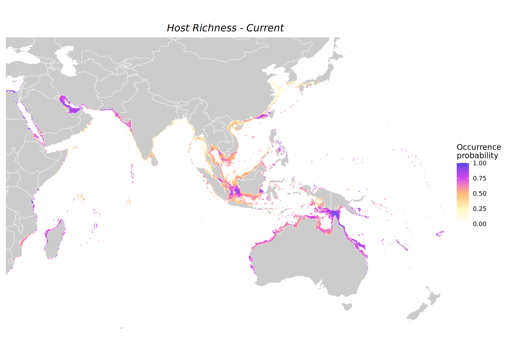
Plot saved to: /home/bi-server-kyoto/a0236995/sdm_anemonefish/figure_files/future_richness_projections/host_richness_current_ggplot.png
# The following objects are now available for subsequent analyses:# - env_pca_current_cropped: SpatRaster of current PCA env predictors# - host_richness_future_list: List of SpatRasters for host future richness, named by scenario# - fish_richness_future_list: List of SpatRasters for anemonefish (env-only) future richness, named by scenario# - env_pca_future_list: List of SpatRasters for future PCA env predictors, named by scenario
Environmental Shifts (PCA Components)
This section examines the projected changes in the principal environmental gradients (PCA components) between the current conditions and future climate scenarios. This helps understand how the fundamental environmental space is predicted to change.
if (!config$use_pca_predictors) {cat("PCA predictors not used in this configuration. Skipping PCA environmental shift analysis.\n")} else {if (is.null(env_pca_current_cropped) ||is.null(env_pca_future_list) ||length(env_pca_future_list) ==0) {cat("Warning: Current or future PCA environmental rasters are not available. Cannot calculate shifts.\n") } else {cat("--- Calculating and Plotting Shifts in PCA Environmental Gradients ---\n")# Ensure current PCA stack is SpatRaster for subtraction current_pca_terra <-if(inherits(env_pca_current_cropped, "SpatRaster")) env_pca_current_cropped else terra::rast(env_pca_current_cropped)for (scenario_name innames(env_pca_future_list)) {if (scenario_name =="current") {next }cat(" Processing shifts for scenario:", scenario_name, "\n") future_pca_stack <- env_pca_future_list[[scenario_name]]if (is.null(future_pca_stack)) {cat(" Skipping scenario", scenario_name, "- future PCA stack is NULL.\n")next }# Ensure layers match for subtraction (e.g., up to n_pca_components)# It's crucial that both current and future PCA stacks were generated with the same number of components# and represent the same underlying variables in the same order before PCA.# If layer names don't match exactly but number of layers does for the first N components:if (terra::nlyr(current_pca_terra) >= config$n_pca_components && terra::nlyr(future_pca_stack) >= config$n_pca_components) {# Select the first N components (defined in config) current_pca_subset <- current_pca_terra[[1:config$n_pca_components]] future_pca_subset <- future_pca_stack[[1:config$n_pca_components]]names(current_pca_subset) <-paste0("PC", 1:config$n_pca_components) # Standardize names for safetynames(future_pca_subset) <-paste0("PC", 1:config$n_pca_components)# Calculate the difference (shift)# terra::`-.SpatRaster` works element-wise if names match or by layer order if names don't.# Better to ensure consistent naming (done above) env_shift_scenario <- future_pca_subset - current_pca_subset names(env_shift_scenario) <-paste0("Environmental PC", 1:config$n_pca_components, " Shifts (Future - Current): ", scenario_label_converter[scenario_name])cat(" Calculated PCA shifts for scenario:", scenario_name, "\n")plot(env_shift_scenario, nc =2) } else {cat(" Warning: Layer mismatch or insufficient layers for PCA shift calculation in scenario", scenario_name, "\n")cat(" Current PCA layers:", terra::nlyr(current_pca_terra), " Future PCA layers:", terra::nlyr(future_pca_stack), " Needed:", config$n_pca_components, "\n") } } }}
--- Calculating and Plotting Shifts in PCA Environmental Gradients ---
Processing shifts for scenario: ssp119_2050
Calculated PCA shifts for scenario: ssp119_2050
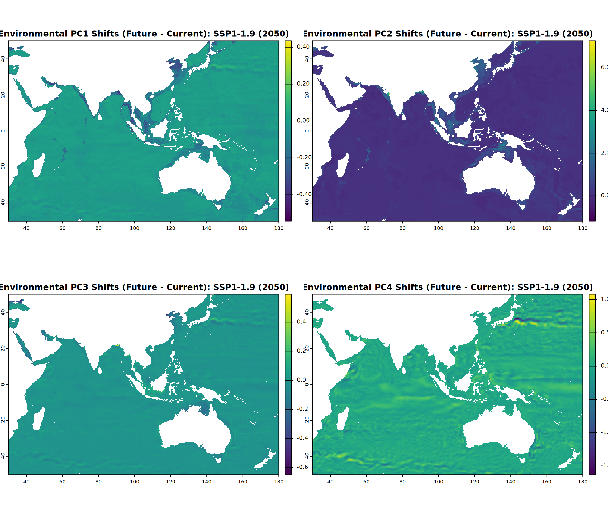
Processing shifts for scenario: ssp119_2100
Calculated PCA shifts for scenario: ssp119_2100
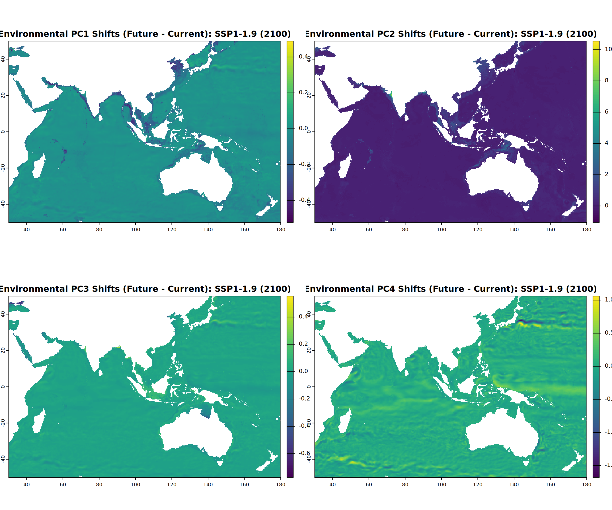
Processing shifts for scenario: ssp585_2050
Calculated PCA shifts for scenario: ssp585_2050
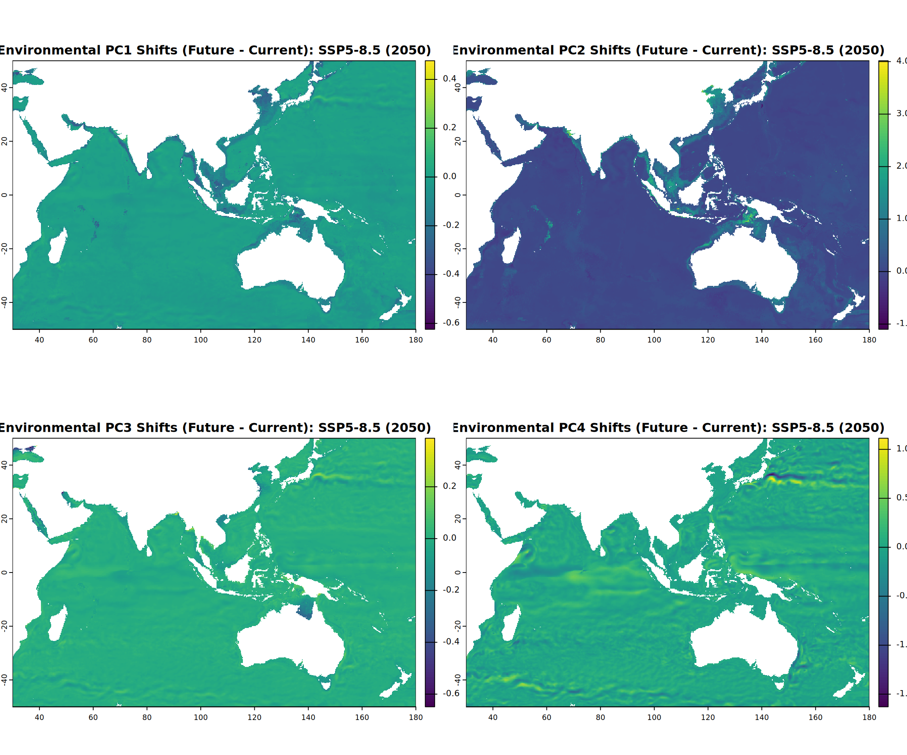
Processing shifts for scenario: ssp585_2100
Calculated PCA shifts for scenario: ssp585_2100
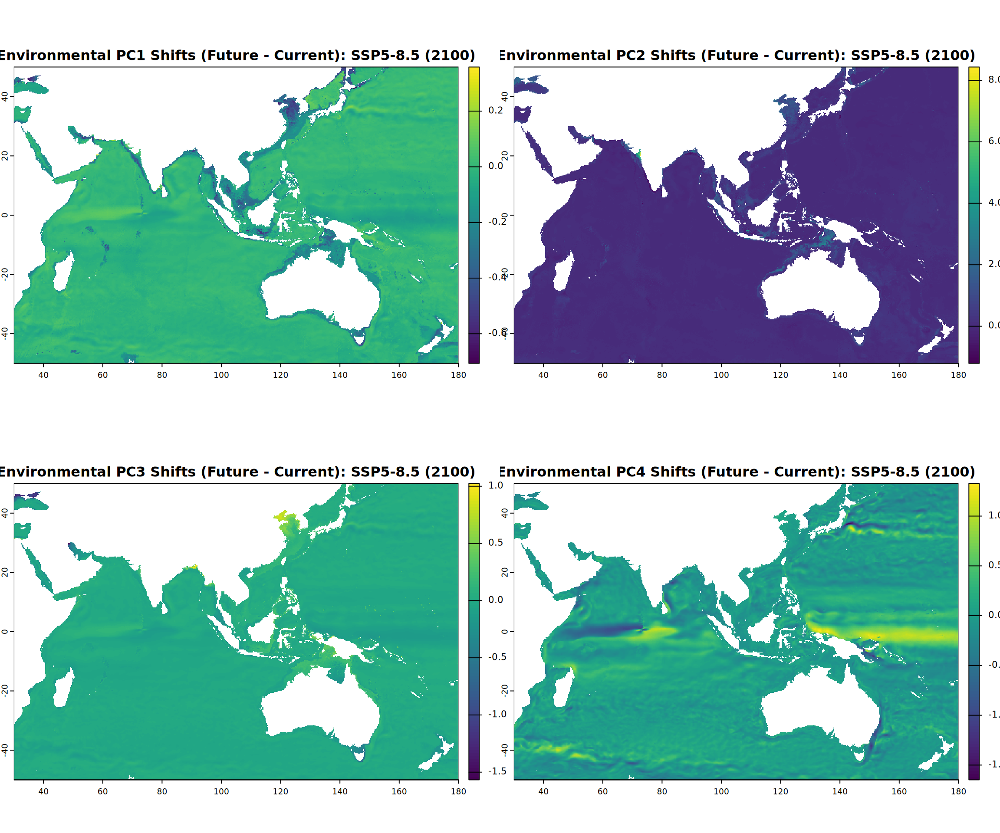
Load Future Individual Species Prediction Rasters
This section loads the individual species prediction rasters for host sea anemones and anemonefish (environmental-only models) for each future scenario. These are needed for calculating Schoener’s D overlap and individual suitability shifts.
--- Loading individual future predictions for Scenario: ssp119_2050 ---
Loaded and cropped 10 host future predictions for ssp119_2050
Warning: Anemonefish (env-only) future prediction file not found for Amphiprion_chagosensis in ssp119_2050
Warning: Anemonefish (env-only) future prediction file not found for Amphiprion_mccullochi in ssp119_2050
Warning: Anemonefish (env-only) future prediction file not found for Amphiprion_pacificus in ssp119_2050
Loaded and cropped 26 anemonefish (env-only) future predictions for ssp119_2050
--- Loading individual future predictions for Scenario: ssp119_2100 ---
Loaded and cropped 10 host future predictions for ssp119_2100
Warning: Anemonefish (env-only) future prediction file not found for Amphiprion_chagosensis in ssp119_2100
Warning: Anemonefish (env-only) future prediction file not found for Amphiprion_mccullochi in ssp119_2100
Warning: Anemonefish (env-only) future prediction file not found for Amphiprion_pacificus in ssp119_2100
Loaded and cropped 26 anemonefish (env-only) future predictions for ssp119_2100
--- Loading individual future predictions for Scenario: ssp585_2050 ---
Loaded and cropped 10 host future predictions for ssp585_2050
Warning: Anemonefish (env-only) future prediction file not found for Amphiprion_chagosensis in ssp585_2050
Warning: Anemonefish (env-only) future prediction file not found for Amphiprion_mccullochi in ssp585_2050
Warning: Anemonefish (env-only) future prediction file not found for Amphiprion_pacificus in ssp585_2050
Loaded and cropped 26 anemonefish (env-only) future predictions for ssp585_2050
--- Loading individual future predictions for Scenario: ssp585_2100 ---
Loaded and cropped 10 host future predictions for ssp585_2100
Warning: Anemonefish (env-only) future prediction file not found for Amphiprion_chagosensis in ssp585_2100
Warning: Anemonefish (env-only) future prediction file not found for Amphiprion_mccullochi in ssp585_2100
Warning: Anemonefish (env-only) future prediction file not found for Amphiprion_pacificus in ssp585_2100
Loaded and cropped 26 anemonefish (env-only) future predictions for ssp585_2100
# Result: host_pred_stacks_future_individual and fish_pred_stacks_future_individual# are lists of SpatRasters, named by scenario, containing individual species layers.
Individual Species Suitability Shifts
This section calculates the mean change in environmental suitability for each individual host sea anemone and anemonefish species between the current period and each future climate scenario. These shift values will be used to explore correlations with niche breadth.
# Prerequisites from previous chunks:# - host_pred_stack_cropped: Current individual host predictions (cropped)# - fish_pred_stack_cropped: Current individual fish (env-only) predictions (cropped)# - host_pred_stacks_future_individual: List of future individual host predictions (cropped), named by scenario# - fish_pred_stacks_future_individual: List of future individual fish (env-only) predictions (cropped), named by scenario# - future_scenarios_to_load: Vector of future scenario names (e.g., "ssp119_2050", "ssp585_2100")if (!exists("host_pred_stack_cropped") ||!exists("fish_pred_stack_cropped") ||!exists("host_pred_stacks_future_individual") ||!exists("fish_pred_stacks_future_individual") ||!exists("future_scenarios_to_load")) {stop("Prerequisite data for calculating suitability shifts is missing. Ensure previous chunks (loading current and future individual predictions) have run successfully.")}suitability_shifts_list <-list() # Initialize list to store results for all species and scenarioscat("--- Calculating Mean Suitability Shifts for Individual Species ---\n")
--- Calculating Mean Suitability Shifts for Individual Species ---
for (scenario_name_fut in future_scenarios_to_load) {cat("\n Processing Scenario:", scenario_name_fut, "\n")# --- Host Anemones Suitability Shifts ---cat(" Calculating shifts for Host Anemones...\n") current_hosts_for_diff <- host_pred_stack_cropped future_hosts_for_diff_raw <- host_pred_stacks_future_individual[[scenario_name_fut]]if (!is.null(current_hosts_for_diff) &&!is.null(future_hosts_for_diff_raw) && terra::nlyr(current_hosts_for_diff) >0&& terra::nlyr(future_hosts_for_diff_raw) >0) { common_host_species <-intersect(names(current_hosts_for_diff), names(future_hosts_for_diff_raw))if (length(common_host_species) >0) { current_hosts_subset <- current_hosts_for_diff[[common_host_species]] future_hosts_subset_raw <- future_hosts_for_diff_raw[[common_host_species]]# Ensure geometry matches for subtraction by resampling future to current if needed future_hosts_subset_aligned <- future_hosts_subset_rawif(!terra::compareGeom(current_hosts_subset, future_hosts_subset_raw, stopOnError=FALSE, res=TRUE, crs=TRUE, ext=TRUE)){cat(" Resampling future host predictions for scenario '", scenario_name_fut, "' to match current geometry for shift calculation.\n") future_hosts_subset_aligned <-tryCatch( terra::resample(future_hosts_subset_raw, current_hosts_subset, method="bilinear"),error =function(e) {cat(" ERROR resampling future host stack for", scenario_name_fut, ":", e$message, "\n"); NULL } ) }if (!is.null(future_hosts_subset_aligned)) { diff_hosts_scenario_indiv <- future_hosts_subset_aligned - current_hosts_subset mean_shifts_hosts_indiv <-global(diff_hosts_scenario_indiv, "mean", na.rm =TRUE)rownames(mean_shifts_hosts_indiv) <-names(diff_hosts_scenario_indiv) # Should be common_host_species suitability_shifts_list[[paste0("hosts_", scenario_name_fut)]] <- mean_shifts_hosts_indivcat(" Mean suitability shifts for hosts in", scenario_name_fut, "calculated.\n")# print(head(mean_shifts_hosts_indiv)) } } else {cat(" No common host species found between current and future stacks for scenario", scenario_name_fut, "\n") } } else {cat(" Skipping host anemones for scenario", scenario_name_fut, "- current or future individual prediction stack missing or empty.\n") }# --- Anemonefish (Environmental-Only Models) Suitability Shifts ---cat(" Calculating shifts for Anemonefish (Env-Only)...\n") current_fish_for_diff <- fish_pred_stack_cropped future_fish_for_diff_raw <- fish_pred_stacks_future_individual[[scenario_name_fut]] if (!is.null(current_fish_for_diff) &&!is.null(future_fish_for_diff_raw) && terra::nlyr(current_fish_for_diff) >0&& terra::nlyr(future_fish_for_diff_raw) >0) { common_fish_species <-intersect(names(current_fish_for_diff), names(future_fish_for_diff_raw))if (length(common_fish_species) >0) { current_fish_subset <- current_fish_for_diff[[common_fish_species]] future_fish_subset_raw <- future_fish_for_diff_raw[[common_fish_species]] future_fish_subset_aligned <- future_fish_subset_rawif(!terra::compareGeom(current_fish_subset, future_fish_subset_raw, stopOnError=FALSE, res=TRUE, crs=TRUE, ext=TRUE)){cat(" Resampling future fish (env-only) predictions for scenario '", scenario_name_fut, "' to match current geometry.\n") future_fish_subset_aligned <-tryCatch( terra::resample(future_fish_subset_raw, current_fish_subset, method="bilinear"),error =function(e) {cat(" ERROR resampling future fish stack for", scenario_name_fut, ":", e$message, "\n"); NULL } ) }if (!is.null(future_fish_subset_aligned)) { diff_fish_scenario_indiv <- future_fish_subset_aligned - current_fish_subset mean_shifts_fish_indiv <-global(diff_fish_scenario_indiv, "mean", na.rm =TRUE)rownames(mean_shifts_fish_indiv) <-names(diff_fish_scenario_indiv) suitability_shifts_list[[paste0("fish_env_only_", scenario_name_fut)]] <- mean_shifts_fish_indivcat(" Mean suitability shifts for anemonefish (env-only) in", scenario_name_fut, "calculated.\n")# print(head(mean_shifts_fish_indiv)) } } else {cat(" No common anemonefish species found between current and future stacks for scenario", scenario_name_fut, "\n") } } else {cat(" Skipping anemonefish (env-only) for scenario", scenario_name_fut, "- current or future individual prediction stack missing or empty.\n") }} # End loop through future scenarios
Processing Scenario: ssp119_2050
Calculating shifts for Host Anemones...
Mean suitability shifts for hosts in ssp119_2050 calculated.
Calculating shifts for Anemonefish (Env-Only)...
Mean suitability shifts for anemonefish (env-only) in ssp119_2050 calculated.
Processing Scenario: ssp119_2100
Calculating shifts for Host Anemones...
Mean suitability shifts for hosts in ssp119_2100 calculated.
Calculating shifts for Anemonefish (Env-Only)...
Mean suitability shifts for anemonefish (env-only) in ssp119_2100 calculated.
Processing Scenario: ssp585_2050
Calculating shifts for Host Anemones...
Mean suitability shifts for hosts in ssp585_2050 calculated.
Calculating shifts for Anemonefish (Env-Only)...
Mean suitability shifts for anemonefish (env-only) in ssp585_2050 calculated.
Processing Scenario: ssp585_2100
Calculating shifts for Host Anemones...
Mean suitability shifts for hosts in ssp585_2100 calculated.
Calculating shifts for Anemonefish (Env-Only)...
Mean suitability shifts for anemonefish (env-only) in ssp585_2100 calculated.
cat("\n--- Individual species suitability shift calculations finished. ---\n")
--- Individual species suitability shift calculations finished. ---
# The `suitability_shifts_list` object is now populated.# Example access: suitability_shifts_list[["hosts_ssp119_2050"]]# It will contain data frames with rownames = species_name_sanitized and a column "mean" for the shift.
Future Host-Anemonefish Overlap Changes by Specialization
This section analyzes the projected changes in niche overlap (Schoener’s D) between anemonefish and their host anemones under future climate scenarios, considering the specialization strategy of the anemonefish. For Specialist anemonefish (≤3 documented hosts), we calculate the change in overlap with their specific documented host(s). If a specialist uses multiple hosts (2 or 3), the average overlap change is considered. For Generalist anemonefish (>3 documented hosts), we calculate the change in overlap with a composite raster representing the presence of any of their documented host anemones. This approach aims to quantify how the availability of suitable host partners might change differently for specialist versus generalist anemonefish.
# TODO FIX THISlibrary(vegan) # For varpart# Ensure dplyr and terra are loaded from setup chunk if not re-loaded hereif (is.null(host_richness_sum_cropped) ||is.null(fish_richness_sum_cropped) || (config$use_pca_predictors &&is.null(env_pca_current_cropped))) {cat("Warning: Necessary raster data (host richness, fish richness, or current PCA env) is missing. Skipping variance partitioning.\n")} else {cat("--- Preparing Data for Variance Partitioning ---\n") layers_for_sampling <-c(host_richness_sum_cropped, fish_richness_sum_cropped)if (config$use_pca_predictors &&!is.null(env_pca_current_cropped)) {if (!terra::compareGeom(layers_for_sampling[[1]], env_pca_current_cropped[[1]], stopOnError=FALSE, res=TRUE, crs=TRUE)) {cat(" Resampling current PCA environmental layers to match richness map geometry for sampling...\n") env_pca_current_resampled <-tryCatch({ terra::resample(env_pca_current_cropped, layers_for_sampling[[1]], method="bilinear") }, error =function(e) {cat(" Warning: Failed to resample PCA env layers:", e$message, "\n"); NULL })if(!is.null(env_pca_current_resampled)) { env_pca_current_for_sampling <- env_pca_current_resampled } else {cat(" Using un-resampled PCA env. May lead to issues if extents differ significantly.\n") env_pca_current_for_sampling <- env_pca_current_cropped } } else { env_pca_current_for_sampling <- env_pca_current_cropped } layers_for_sampling <-c(layers_for_sampling, env_pca_current_for_sampling[[1:config$n_pca_components]]) } elseif (!config$use_pca_predictors) {cat("Warning: Variance partitioning without PCA environmental layers is not fully implemented here. Please adapt if using VIF-selected vars.\n") }if (terra::nlyr(layers_for_sampling) <3) {cat("Error: Need at least host richness, fish richness, and one environmental layer for variance partitioning. Found:", terra::nlyr(layers_for_sampling), "layers.\n") } else {names(layers_for_sampling)[1] <-"HostRichness"names(layers_for_sampling)[2] <-"FishRichness_EnvOnly"if (config$use_pca_predictors && terra::nlyr(layers_for_sampling) >2) {names(layers_for_sampling)[3:(2+config$n_pca_components)] <-paste0("PC", 1:config$n_pca_components) }cat("Stack for sampling has layers:", paste(names(layers_for_sampling), collapse=", "), "\n")set.seed(123) mask_all_valid <-sum(!is.na(layers_for_sampling)) ==nlyr(layers_for_sampling)if(global(mask_all_valid, "sum", na.rm=T)$sum ==0) {cat("Error: No cells where all predictor layers for variance partitioning have valid data.\n") } else { bg_points_sampled_varpart <- terra::spatSample(mask_all_valid, 5000, method ="random", na.rm =TRUE, xy=TRUE, warn=FALSE)cat("Sampled", nrow(bg_points_sampled_varpart), "points for variance partitioning.\n") df_sampled_values <- terra::extract(layers_for_sampling, bg_points_sampled_varpart[, c("x", "y")], ID =FALSE) df_sampled_values <-as.data.frame(df_sampled_values) df_sampled_values <-na.omit(df_sampled_values) cat("Using", nrow(df_sampled_values), "complete cases for variance partitioning.\n")if (nrow(df_sampled_values) >10&&"HostRichness"%in%names(df_sampled_values) &&"FishRichness_EnvOnly"%in%names(df_sampled_values) && ( (!config$use_pca_predictors &&ncol(df_sampled_values) >2) || (config$use_pca_predictors &&all(paste0("PC", 1:config$n_pca_components) %in%names(df_sampled_values))) ) ) { fish_richness_response <- df_sampled_values$FishRichness_EnvOnly host_richness_predictor <- df_sampled_values$HostRichnessif (config$use_pca_predictors) { env_predictors_df <- df_sampled_values[, paste0("PC", 1:config$n_pca_components), drop =FALSE] } else { env_col_names <-setdiff(names(df_sampled_values), c("HostRichness", "FishRichness_EnvOnly"))if(length(env_col_names) >0) { env_predictors_df <- df_sampled_values[, env_col_names, drop =FALSE] } else { env_predictors_df <-NULLcat("Warning: No environmental predictor columns identified for VIF-based variance partitioning.\n") } }if (!is.null(env_predictors_df) &&ncol(env_predictors_df) >0) { varpart_result <- vegan::varpart(fish_richness_response, host_richness_predictor, env_predictors_df)cat("\n--- Variance Partitioning Results ---\n")print(varpart_result)# --- Plot and Save Variance Partitioning Diagram ---# Display in RMarkdown output firstplot(varpart_result, main ="Variance Partitioning: Anemonefish Richness (Env-Only Models)",Xnames =c("Host Richness", "Environment (PCA)"), # More descriptive names for the circlesbg =c("skyblue", "lightgreen"), # Optional: colors for circlescex =0.9, # Adjust text size inside circles if neededid.size =0.9# Adjust ID size (a,b,c,d) if needed ) # Save the plot if figure_output_dir existsif (exists("figure_output_dir") &&dir.exists(figure_output_dir)) { varpart_plot_filename <-file.path(figure_output_dir, "varpart_richness.png")# Define plot dimensions for saved file - varpart plots often need specific aspect ratios png_width_varpart <-800 png_height_varpart <-600 png_res_varpart <-100png(filename = varpart_plot_filename, width = png_width_varpart, height = png_height_varpart, units ="px", res = png_res_varpart)plot(varpart_result, main ="Variance Partitioning: Fish Richness\n(Host Richness vs. Environment)", # Example of a more concise title for savingXnames =c("Host Richness", "Environment"), bg =c("skyblue", "lightgreen"),cex =0.9,id.size =0.9 )dev.off()cat("Saved variance partitioning plot to:", varpart_plot_filename, "\n") }# --- End Plot and Save --- cor_test_result <-cor.test(df_sampled_values$HostRichness, df_sampled_values$FishRichness_EnvOnly)cat("\nPearson Correlation between Host Richness and Fish (Env-Only) Richness:\n")print(cor_test_result) } else {cat("Warning: Environmental predictor data frame is empty. Skipping variance partitioning.\n") } } else {cat("Warning: Not enough data or required columns missing for variance partitioning.\n") } } } }
--- Preparing Data for Variance Partitioning ---
Stack for sampling has layers: HostRichness, FishRichness_EnvOnly, PC1, PC2, PC3, PC4
Sampled 5000 points for variance partitioning.
Using 3505 complete cases for variance partitioning.
--- Variance Partitioning Results ---
Partition of variance in RDA
Call: vegan::varpart(Y = fish_richness_response, X =
host_richness_predictor, env_predictors_df)
Explanatory tables:
X1: host_richness_predictor
X2: env_predictors_df
No. of explanatory tables: 2
Total variation (SS): 39543
Variance: 11.285
No. of observations: 3505
Partition table:
Df R.squared Adj.R.squared Testable
[a+c] = X1 1 0.92674 0.92672 TRUE
[b+c] = X2 4 0.59582 0.59536 TRUE
[a+b+c] = X1+X2 5 0.94310 0.94302 TRUE
Individual fractions
[a] = X1|X2 1 0.34766 TRUE
[b] = X2|X1 4 0.01630 TRUE
[c] 0 0.57906 FALSE
[d] = Residuals 0.05698 FALSE
---
Use function 'rda' to test significance of fractions of interest
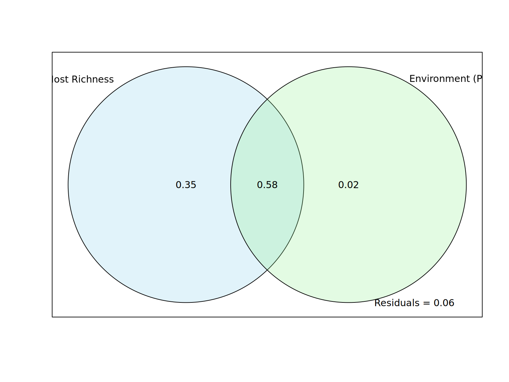
Saved variance partitioning plot to: /home/bi-server-kyoto/a0236995/sdm_anemonefish/figure_files/varpart_richness.png
Pearson Correlation between Host Richness and Fish (Env-Only) Richness:
Pearson's product-moment correlation
data: df_sampled_values$HostRichness and df_sampled_values$FishRichness_EnvOnly
t = 210.51, df = 3503, p-value < 2.2e-16
alternative hypothesis: true correlation is not equal to 0
95 percent confidence interval:
0.9601690 0.9650248
sample estimates:
cor
0.9626743
Relationship between Host and Anemonefish Richness (Current)
This section explores the relationship between the current predicted richness of host sea anemones and their mutualistic anemonefish (based on environmental-only models). We use variance partitioning to determine the independent and shared contributions of host richness and environmental factors (PCA components) to anemonefish richness.
library(vegan) # For varpartif (is.null(host_richness_sum_cropped) ||is.null(fish_richness_sum_cropped) || (config$use_pca_predictors &&is.null(env_pca_current_cropped))) {cat("Warning: Necessary raster data (host richness, fish richness, or current PCA env) is missing. Skipping variance partitioning.\n")} else {cat("--- Preparing Data for Variance Partitioning ---\n")# Ensure all layers have the same extent and resolution for stacking.# The previous cropping step should have handled this for richness sums.# If PCA was used, env_pca_current_cropped should also match. layers_for_sampling <-c(host_richness_sum_cropped, fish_richness_sum_cropped)if (config$use_pca_predictors &&!is.null(env_pca_current_cropped)) {# Ensure the env_pca_current_cropped is compatible. Resample if necessary.if (!terra::compareGeom(layers_for_sampling[[1]], env_pca_current_cropped[[1]], stopOnError=FALSE, res=TRUE, crs=TRUE)) {cat(" Resampling current PCA environmental layers to match richness map geometry for sampling...\n") env_pca_current_resampled <-tryCatch({ terra::resample(env_pca_current_cropped, layers_for_sampling[[1]], method="bilinear") }, error =function(e) {cat(" Warning: Failed to resample PCA env layers:", e$message, "\n"); NULL })if(!is.null(env_pca_current_resampled)) { env_pca_current_for_sampling <- env_pca_current_resampled } else {cat(" Using un-resampled PCA env. May lead to issues if extents differ significantly.\n") env_pca_current_for_sampling <- env_pca_current_cropped } } else { env_pca_current_for_sampling <- env_pca_current_cropped } layers_for_sampling <-c(layers_for_sampling, env_pca_current_for_sampling[[1:config$n_pca_components]]) # Use first N components } elseif (!config$use_pca_predictors) {# TODO: If not using PCA, you'd need to load your VIF-selected CURRENT environmental rasters here,# ensure they are cropped and resampled like the richness maps, and add them to layers_for_sampling.cat("Warning: Variance partitioning without PCA environmental layers is not fully implemented here. Please adapt if using VIF-selected vars.\n") }# Check if we have enough layers to proceedif (terra::nlyr(layers_for_sampling) <3) {cat("Error: Need at least host richness, fish richness, and one environmental layer for variance partitioning. Found:", terra::nlyr(layers_for_sampling), "layers.\n") } else {# Rename layers for clarity in the output dataframenames(layers_for_sampling)[1] <-"HostRichness"names(layers_for_sampling)[2] <-"FishRichness_EnvOnly"if (config$use_pca_predictors && terra::nlyr(layers_for_sampling) >2) {names(layers_for_sampling)[3:(2+config$n_pca_components)] <-paste0("PC", 1:config$n_pca_components) }cat("Stack for sampling has layers:", paste(names(layers_for_sampling), collapse=", "), "\n")# Sample random points# Using dismo::randomPoints for consistency with ant paper if preferred, or terra::spatSampleset.seed(123) # for reproducibility# bg_points_sampled_varpart <- dismo::randomPoints(raster::raster(layers_for_sampling[[1]]), 5000) # dismo needs raster object# Note: dismo::randomPoints might struggle with large SpatRasters or specific extents.# Using terra::spatSample might be more robust here with SpatRasters.# We need to sample from areas where ALL layers have data.# One way is to sample from the first layer, then extract from the stack.# Or, create a mask where all layers are non-NA. mask_all_valid <-sum(!is.na(layers_for_sampling)) ==nlyr(layers_for_sampling)if(global(mask_all_valid, "sum", na.rm=T)$sum ==0) {cat("Error: No cells where all predictor layers for variance partitioning have valid data.\n") } else { bg_points_sampled_varpart <- terra::spatSample(mask_all_valid, 5000, method ="random", na.rm =TRUE, xy=TRUE, warn=FALSE)cat("Sampled", nrow(bg_points_sampled_varpart), "points for variance partitioning.\n") df_sampled_values <- terra::extract(layers_for_sampling, bg_points_sampled_varpart[, c("x", "y")], ID =FALSE) df_sampled_values <-as.data.frame(df_sampled_values) df_sampled_values <-na.omit(df_sampled_values) # Remove any rows with NAs that might have slipped throughcat("Using", nrow(df_sampled_values), "complete cases for variance partitioning.\n")if (nrow(df_sampled_values) >10&&"HostRichness"%in%names(df_sampled_values) &&"FishRichness_EnvOnly"%in%names(df_sampled_values) && ( (!config$use_pca_predictors &&ncol(df_sampled_values) >2) || (config$use_pca_predictors &&all(paste0("PC", 1:config$n_pca_components) %in%names(df_sampled_values))) ) ) {# Prepare data for varpart fish_richness_response <- df_sampled_values$FishRichness_EnvOnly host_richness_predictor <- df_sampled_values$HostRichnessif (config$use_pca_predictors) { env_predictors_df <- df_sampled_values[, paste0("PC", 1:config$n_pca_components), drop =FALSE] } else {# If using VIF, select the environmental columns (excluding HostRichness and FishRichness_EnvOnly) env_col_names <-setdiff(names(df_sampled_values), c("HostRichness", "FishRichness_EnvOnly"))if(length(env_col_names) >0) { env_predictors_df <- df_sampled_values[, env_col_names, drop =FALSE] } else { env_predictors_df <-NULLcat("Warning: No environmental predictor columns identified for VIF-based variance partitioning.\n") } }if (!is.null(env_predictors_df) &&ncol(env_predictors_df) >0) {# Perform variance partitioning# Response: FishRichness_EnvOnly# Predictor Group 1: HostRichness# Predictor Group 2: Environmental variables (PCA components or VIF-selected) varpart_result <- vegan::varpart(fish_richness_response, host_richness_predictor, env_predictors_df)cat("\n--- Variance Partitioning Results ---\n")print(varpart_result)plot(varpart_result, main ="Variance Partitioning: Anemonefish Richness (Env-Only Models)")# Pearson correlation between host and fish richness cor_test_result <-cor.test(df_sampled_values$HostRichness, df_sampled_values$FishRichness_EnvOnly)cat("\nPearson Correlation between Host Richness and Fish (Env-Only) Richness:\n")print(cor_test_result) } else {cat("Warning: Environmental predictor data frame is empty. Skipping variance partitioning.\n") } } else {cat("Warning: Not enough data or required columns missing for variance partitioning.\n") } } # end else for mask_all_valid check } # end else for nlyr check}
--- Preparing Data for Variance Partitioning ---
Stack for sampling has layers: HostRichness, FishRichness_EnvOnly, PC1, PC2, PC3, PC4
Sampled 5000 points for variance partitioning.
Using 3505 complete cases for variance partitioning.
--- Variance Partitioning Results ---
Partition of variance in RDA
Call: vegan::varpart(Y = fish_richness_response, X =
host_richness_predictor, env_predictors_df)
Explanatory tables:
X1: host_richness_predictor
X2: env_predictors_df
No. of explanatory tables: 2
Total variation (SS): 39543
Variance: 11.285
No. of observations: 3505
Partition table:
Df R.squared Adj.R.squared Testable
[a+c] = X1 1 0.92674 0.92672 TRUE
[b+c] = X2 4 0.59582 0.59536 TRUE
[a+b+c] = X1+X2 5 0.94310 0.94302 TRUE
Individual fractions
[a] = X1|X2 1 0.34766 TRUE
[b] = X2|X1 4 0.01630 TRUE
[c] 0 0.57906 FALSE
[d] = Residuals 0.05698 FALSE
---
Use function 'rda' to test significance of fractions of interest
Pearson Correlation between Host Richness and Fish (Env-Only) Richness:
Pearson's product-moment correlation
data: df_sampled_values$HostRichness and df_sampled_values$FishRichness_EnvOnly
t = 210.51, df = 3503, p-value < 2.2e-16
alternative hypothesis: true correlation is not equal to 0
95 percent confidence interval:
0.9601690 0.9650248
sample estimates:
cor
0.9626743
Levin’s B Niche Breadth (Current Predictions)
This section calculates Levin’s B (\(B_2\)) niche breadth metric for each host sea anemone species and each anemonefish species (using their environmental-only model predictions for the current period). This metric quantifies the uniformity of a species’ predicted suitability across its range. We then compare the mean niche breadth between the two guilds.
library(ENMTools)library(dplyr)# Ensure the current individual prediction stacks are available and croppedif (is.null(host_pred_stack_cropped) ||!inherits(host_pred_stack_cropped, "SpatRaster")) {stop("`host_pred_stack_cropped` is not available or not a SpatRaster. Run previous chunks.")}if (is.null(fish_pred_stack_cropped) ||!inherits(fish_pred_stack_cropped, "SpatRaster")) {stop("`fish_pred_stack_cropped` (for env-only fish models) is not available or not a SpatRaster. Run previous chunks.")}# --- 1. Calculate Niche Breadth for Host Sea Anemones ---cat("--- Calculating Levin's B Niche Breadth for Host Sea Anemones (Current) ---\n")
--- Calculating Levin's B Niche Breadth for Host Sea Anemones (Current) ---
Calculating breadth for anemonefish: Amphiprion_clarkii
Calculating breadth for anemonefish: Amphiprion_frenatus
Calculating breadth for anemonefish: Amphiprion_ocellaris
Calculating breadth for anemonefish: Amphiprion_perideraion
Calculating breadth for anemonefish: Amphiprion_polymnus
Calculating breadth for anemonefish: Amphiprion_sandaracinos
Calculating breadth for anemonefish: Amphiprion_akallopisos
Calculating breadth for anemonefish: Amphiprion_omanensis
Calculating breadth for anemonefish: Amphiprion_akindynos
Calculating breadth for anemonefish: Amphiprion_allardi
Calculating breadth for anemonefish: Amphiprion_barberi
Calculating breadth for anemonefish: Amphiprion_bicinctus
Calculating breadth for anemonefish: Amphiprion_chrysogaster
Calculating breadth for anemonefish: Amphiprion_chrysopterus
Calculating breadth for anemonefish: Amphiprion_ephippium
Calculating breadth for anemonefish: Amphiprion_fuscocaudatus
Calculating breadth for anemonefish: Amphiprion_latezonatus
Warning: Could not calculate breadth for fish Amphiprion_latezonatus : missing value where TRUE/FALSE needed
Calculating breadth for anemonefish: Amphiprion_latifasciatus
Calculating breadth for anemonefish: Amphiprion_leucokranos
Calculating breadth for anemonefish: Amphiprion_melanopus
Calculating breadth for anemonefish: Amphiprion_nigripes
Calculating breadth for anemonefish: Amphiprion_percula
Calculating breadth for anemonefish: Amphiprion_rubrocinctus
Calculating breadth for anemonefish: Amphiprion_sebae
Calculating breadth for anemonefish: Amphiprion_tricinctus
Calculating breadth for anemonefish: Premnas_biaculeatus
# --- 3. Compare Mean Niche Breadth (Levin's B2) ---if (nrow(host_niche_breadth_df) >1&&nrow(fish_niche_breadth_df) >1) {cat("\n--- Comparing Mean Niche Breadth (Levin's B2) between Guilds ---\n")if ("levins_B2"%in%names(host_niche_breadth_df) &&"levins_B2"%in%names(fish_niche_breadth_df)) { valid_hosts_b2 <- host_niche_breadth_df$levins_B2[!is.na(host_niche_breadth_df$levins_B2)] valid_fish_b2 <- fish_niche_breadth_df$levins_B2[!is.na(fish_niche_breadth_df$levins_B2)]if (length(valid_hosts_b2) >1&&length(valid_fish_b2) >1) { ttest_breadth_b2 <-t.test(valid_hosts_b2, valid_fish_b2)cat("Welch Two Sample t-test for Levin's B2 (Hosts vs. Fish Env-Only):\n")print(ttest_breadth_b2) } else {cat("Not enough valid B2 values for t-test after removing NAs.\n") }cat("\nStandard Deviation of Levin's B2:\n")cat(" Hosts:", sd(valid_hosts_b2, na.rm =TRUE), "\n")cat(" Anemonefish:", sd(valid_fish_b2, na.rm =TRUE), "\n") } else {cat("Levin's B2 column not found in one or both breadth data frames.\n") }} else {cat("Not enough data to compare niche breadths between hosts and anemonefish.\n")}
--- Comparing Mean Niche Breadth (Levin's B2) between Guilds ---
Welch Two Sample t-test for Levin's B2 (Hosts vs. Fish Env-Only):
Welch Two Sample t-test
data: valid_hosts_b2 and valid_fish_b2
t = 1.5624, df = 15.123, p-value = 0.1389
alternative hypothesis: true difference in means is not equal to 0
95 percent confidence interval:
-0.03757814 0.24448601
sample estimates:
mean of x mean of y
0.3192108 0.2157569
Standard Deviation of Levin's B2:
Hosts: 0.1821734
Anemonefish: 0.1632156
Niche Breadth vs. Suitability Shifts: A Comparative Analysis
This section explores the relationship between current environmental niche breadth (Levin’s B2) and projected mean suitability shifts under future climate scenarios. The analysis is performed separately for host sea anemones and for anemonefish. For anemonefish, a further distinction is made based on their host specialization (Generalist: >3 host species; Specialist: ≤3 host species) to investigate if the degree of host dependency influences their response patterns. Correlation tests are performed for each group and scenario, and the relationships are visualized to identify potential links between a species’ current niche characteristics and its vulnerability or resilience to environmental change.
# --- Load necessary libraries if not already loaded ---# Ensure these libraries are loaded in your R session or a preceding chunk# library(dplyr)# library(tidyr)# library(ggplot2)# library(stringr)# library(tibble)# --- Ensure prerequisite data is available (modified to be anemonefish-specific) ---if (!exists("fish_niche_breadth_df")) {stop("Niche breadth data frame ('fish_niche_breadth_df') not found. Run previous chunk.")}if (!exists("suitability_shifts_list") ||!is.list(suitability_shifts_list) ||length(suitability_shifts_list) ==0) {stop("`suitability_shifts_list` not found or empty. Run 'Individual Species Suitability Shifts' chunk.")}if (!exists("anemonefish_specialization_df") ||is.null(anemonefish_specialization_df)) {stop("`anemonefish_specialization_df` not found. Ensure the 'AUC Improvement by Host Specialization' chunk has run.")}# --- Define 2100 scenarios for processing ---# This part assumes a variable like `future_scenarios_to_load_full` or `config$env_scenarios` holds your scenario names.# For this script, we'll create the variable directly based on what you've provided.future_scenarios_to_load <-c("ssp119_2050", "ssp119_2100", "ssp585_2050", "ssp585_2100") # As provided in your output# CORRECTED: Filter to include only scenarios ending in "_2100"scenarios_to_process <- future_scenarios_to_load[grepl("_2100$", future_scenarios_to_load)]if (length(scenarios_to_process) ==0) {# This error message is now updated to reflect the corrected logicstop("No scenarios ending in '_2100' found in the scenario list. Please check names like 'ssp119_2100'.")}cat("--- Processing Anemonefish (Env-Only) Breadth vs. Suitability Shift for 2100 ---\n")
--- Processing Anemonefish (Env-Only) Breadth vs. Suitability Shift for 2100 ---
fish_breadth_shifts_df_final <-NULLif (nrow(fish_niche_breadth_df) >0) { fish_breadth_shifts_df_temp <- fish_niche_breadth_df %>% dplyr::select(species_name_sanitized, breadth_B2 = levins_B2) %>%left_join(anemonefish_specialization_df %>% dplyr::select(species, specialization_type, n_hosts),by =c("species_name_sanitized"="species"))for (scenario_name in scenarios_to_process) { shift_data_name <-paste0("fish_env_only_", scenario_name) shift_col_name <-paste0("shift_", gsub("ssp", "", scenario_name)) # Results in "shift_119_2100" etc.if (shift_data_name %in%names(suitability_shifts_list) &&!is.null(suitability_shifts_list[[shift_data_name]]) &&nrow(suitability_shifts_list[[shift_data_name]]) >0) { temp_shift_df_fish <- suitability_shifts_list[[shift_data_name]] %>%as.data.frame() %>% tibble::rownames_to_column("species_name_sanitized") %>% dplyr::select(species_name_sanitized, mean_suitability_shift = mean) fish_breadth_shifts_df_temp <- fish_breadth_shifts_df_temp %>%left_join(temp_shift_df_fish %>%rename(!!shift_col_name := mean_suitability_shift),by ="species_name_sanitized") } else {cat(" Warning: Shift data for anemonefish in scenario '", scenario_name, "' not found. Column '", shift_col_name, "' will be NA.\n") fish_breadth_shifts_df_temp[[shift_col_name]] <-NA_real_ } } fish_breadth_shifts_df_final <- fish_breadth_shifts_df_temp %>%filter(!is.na(breadth_B2), !is.na(specialization_type))cat("Anemonefish (env-only) data prepared for 2100 analysis:\n")if(!is.null(fish_breadth_shifts_df_final)) print(head(fish_breadth_shifts_df_final))# Calculate and print correlations for 2100 scenariosfor (scenario_name in scenarios_to_process) { shift_col_name <-paste0("shift_", gsub("ssp", "", scenario_name))if (shift_col_name %in%names(fish_breadth_shifts_df_final)) {cat("\nCorrelations - Breadth vs. Shift (", scenario_name, "):\n") temp_df_cor_fish_gen <- fish_breadth_shifts_df_final %>%filter(specialization_type =="Generalist") %>% dplyr::select(breadth_B2, !!sym(shift_col_name)) %>%na.omit()if(nrow(temp_df_cor_fish_gen) >2) { cor_test_fish_gen <-cor.test(temp_df_cor_fish_gen$breadth_B2, temp_df_cor_fish_gen[[shift_col_name]], method ="pearson")cat(" Generalists:\n")print(cor_test_fish_gen) } else {cat(" Not enough data points for Generalists in scenario:", scenario_name, "\n") } temp_df_cor_fish_spec <- fish_breadth_shifts_df_final %>%filter(specialization_type =="Specialist") %>% dplyr::select(breadth_B2, !!sym(shift_col_name)) %>%na.omit()if(nrow(temp_df_cor_fish_spec) >2){ cor_test_fish_spec <-cor.test(temp_df_cor_fish_spec$breadth_B2, temp_df_cor_fish_spec[[shift_col_name]], method ="pearson")cat(" Specialists:\n")print(cor_test_fish_spec) } else {cat(" Not enough data points for Specialists in scenario:", scenario_name, "\n") } } }} else {cat("No anemonefish niche breadth data available.\n")}
Anemonefish (env-only) data prepared for 2100 analysis:
species_name_sanitized breadth_B2 specialization_type n_hosts shift_119_2100
1 Amphiprion_clarkii 0.1685557 Generalist 9 0.005938971
2 Amphiprion_frenatus 0.1551884 Specialist 1 -0.002292901
3 Amphiprion_ocellaris 0.1584185 Generalist 3 0.008576375
4 Amphiprion_perideraion 0.2022923 Generalist 4 -0.002811991
5 Amphiprion_polymnus 0.2567353 Generalist 2 0.008655777
6 Amphiprion_sandaracinos 0.1408752 Generalist 2 0.016894402
shift_585_2100
1 0.0066586929
2 -0.0006243751
3 0.0093639136
4 -0.0018158388
5 0.0094944935
6 0.0180557323
Correlations - Breadth vs. Shift ( ssp119_2100 ):
Generalists:
Pearson's product-moment correlation
data: temp_df_cor_fish_gen$breadth_B2 and temp_df_cor_fish_gen[[shift_col_name]]
t = 2.8849, df = 17, p-value = 0.01029
alternative hypothesis: true correlation is not equal to 0
95 percent confidence interval:
0.1610148 0.8152241
sample estimates:
cor
0.5732964
Specialists:
Pearson's product-moment correlation
data: temp_df_cor_fish_spec$breadth_B2 and temp_df_cor_fish_spec[[shift_col_name]]
t = 7.1627, df = 4, p-value = 0.002011
alternative hypothesis: true correlation is not equal to 0
95 percent confidence interval:
0.6943195 0.9961034
sample estimates:
cor
0.9631579
Correlations - Breadth vs. Shift ( ssp585_2100 ):
Generalists:
Pearson's product-moment correlation
data: temp_df_cor_fish_gen$breadth_B2 and temp_df_cor_fish_gen[[shift_col_name]]
t = 2.8897, df = 17, p-value = 0.01018
alternative hypothesis: true correlation is not equal to 0
95 percent confidence interval:
0.1619291 0.8155388
sample estimates:
cor
0.5739263
Specialists:
Pearson's product-moment correlation
data: temp_df_cor_fish_spec$breadth_B2 and temp_df_cor_fish_spec[[shift_col_name]]
t = 5.1846, df = 4, p-value = 0.006586
alternative hypothesis: true correlation is not equal to 0
95 percent confidence interval:
0.5000572 0.9928136
sample estimates:
cor
0.9329871
# --- Prepare data for plotting (only Anemonefish, only 2100) ---all_breadth_shifts_long_df_final <-NULLif (!is.null(fish_breadth_shifts_df_final) &&nrow(fish_breadth_shifts_df_final) >0) { fish_plot_df_final <- fish_breadth_shifts_df_final %>%pivot_longer(cols =starts_with("shift_"),names_to ="scenario_shift_code",values_to ="suitability_shift") %>%mutate(guild ="Anemonefish") all_breadth_shifts_long_df_final <- fish_plot_df_final}if (!is.null(all_breadth_shifts_long_df_final) &&nrow(all_breadth_shifts_long_df_final) >0) { all_breadth_shifts_long_df_final <- all_breadth_shifts_long_df_final %>%filter(!is.na(breadth_B2), !is.na(suitability_shift)) %>%# CORRECTED: Simplified label creation for the "sspXXX_YYYY" formatmutate(scenario_display = stringr::str_replace(scenario_shift_code, "shift_", "SSP"),scenario_display = stringr::str_replace(scenario_display, "_", "-")) %>%mutate(facet_group =paste(guild, specialization_type, sep=" - "))cat("\nCombined long format data for plotting (Anemonefish, 2100):\n")if(!is.null(all_breadth_shifts_long_df_final)) print(head(all_breadth_shifts_long_df_final)) plot_breadth_vs_shift_specialization <-ggplot(all_breadth_shifts_long_df_final,aes(x = suitability_shift, y = breadth_B2)) +geom_point(alpha =0.7, aes(color = specialization_type)) +geom_smooth(method ="lm", se =TRUE, aes(linetype = specialization_type, color=specialization_type)) +facet_wrap(~ scenario_display, scales ="free_x",ncol=length(unique(all_breadth_shifts_long_df_final$scenario_display))) +labs(title ="Anemonefish: Niche Breadth vs. Mean Suitability Shift (2100)",x ="Mean Change in Suitability (2100 vs. Current)",y ="Levin's B2 (Niche Breadth)" ) +scale_color_manual(values =c("Generalist"="cornflowerblue", "Specialist"="darkorange"), name ="Specialization Type") +scale_linetype_manual(values =c("Generalist"="dashed", "Specialist"="dotted"), name ="Specialization Type") +theme_bw(base_size =10) +theme(strip.text =element_text(size =8), # Slightly larger font for claritylegend.position ="bottom",plot.title =element_text(hjust=0.5, face="bold"),plot.subtitle =element_text(hjust=0.5))print(plot_breadth_vs_shift_specialization)if (exists("figure_output_dir") &&dir.exists(figure_output_dir)) { faceted_breadth_shift_plot_filename <-file.path(figure_output_dir, "anemonefish_breadth_vs_shift_2100.png")ggsave(filename = faceted_breadth_shift_plot_filename,plot = plot_breadth_vs_shift_specialization,width =10, height =6, units ="in", dpi =300)cat("Saved plot to:", faceted_breadth_shift_plot_filename, "\n") } else {cat("Warning: 'figure_output_dir' not defined. Plot not saved to file.\n") }} else {cat("Not enough data to plot breadth vs. suitability shifts for 2100.\n")}
Saved plot to: /home/bi-server-kyoto/a0236995/sdm_anemonefish/figure_files/anemonefish_breadth_vs_shift_2100.png
Variable Importance Comparison
This section loads the variable importance (VI) scores from the environmental-only SDMs for host sea anemones and anemonefish. It then compares the importance of each environmental predictor (PCA components if used) between the two guilds.
library(dplyr)library(tidyr) # Not strictly needed for this chunk as is, but good to have if you modifylibrary(ggplot2)library(stringr) # For str_remove if needed in species_sanitized, though seems done by filenamelibrary(readr) # For read_csvlibrary(purrr) # For map_df# Determine predictor suffix used for the environmental-only modelsenv_model_predictor_suffix <-ifelse(config$use_pca_predictors, "_pca", "_vif")# --- Load Host Anemone Variable Importance ---cat("--- Loading Host Anemone Variable Importance ---\n")
--- Loading Host Anemone Variable Importance ---
# Original logic for finding host_vi_dir and host_vi_fileshost_vi_subdir_name <- config$model_output_subdir_map[[env_model_predictor_suffix]] %||%ifelse(config$use_pca_predictors, "anemone_pca", "anemone_vif")host_vi_dir_base <-file.path(config$target_vi_base, host_vi_subdir_name)host_vi_files <-list.files(path = host_vi_dir_base, pattern ="^VI_.*\\.csv$", full.names =TRUE)# Fallback if subdirectory structure is slightly different (e.g., .../anemone_pca/anemone_pca)if (length(host_vi_files) ==0&& env_model_predictor_suffix =="_pca") { host_vi_dir_alt <-file.path(config$target_vi_base, "anemone_pca") # Check one level up from expected subdir host_vi_files_alt_check <-list.files(path = host_vi_dir_alt, pattern ="^VI_.*\\.csv$", full.names =TRUE)if(length(host_vi_files_alt_check) >0) { host_vi_files <- host_vi_files_alt_checkcat(" Found host VI files in alternative directory:", host_vi_dir_alt, "\n") } else { # Check if it's nested further host_vi_dir_nested <-file.path(host_vi_dir_base, "anemone_pca") # Original had host_vi_dir/anemone_pca host_vi_files_nested_check <-list.files(path = host_vi_dir_nested, pattern ="^VI_.*\\.csv$", full.names =TRUE)if(length(host_vi_files_nested_check) >0) { host_vi_files <- host_vi_files_nested_checkcat(" Found host VI files in nested directory:", host_vi_dir_nested, "\n") } }}
Found host VI files in alternative directory: /home/bi-server-kyoto/a0236995/sdm_anemonefish/data/output/anemone_pca
if (length(host_vi_files) >0) { host_vi_data <- purrr::map_df(host_vi_files, ~readr::read_csv(.x, show_col_types =FALSE) %>%mutate(filename =basename(.x))) %>%mutate(species_sanitized =str_remove(str_remove(filename, "^VI_"), "\\.csv$"),guild ="Host Anemones"# Consistent naming with scale_fill_manual later ) %>%rename(Permutation_Importance = Importance) cat("Loaded VI data for", length(unique(host_vi_data$species_sanitized)), "host species.\n")} else {cat("Warning: No Variable Importance CSV files found for host anemones. Checked:", host_vi_dir_base, "and potential alternatives.\n") host_vi_data <-NULL}
fish_vi_subdir_name <- config$model_output_subdir_map[[env_model_predictor_suffix]] %||%ifelse(config$use_pca_predictors, "anemonefish_pca", "anemonefish_vif")fish_vi_dir_base <-file.path(config$target_vi_base, fish_vi_subdir_name)fish_vi_files <-list.files(path = fish_vi_dir_base, pattern ="^VI_.*\\.csv$", full.names =TRUE)if (length(fish_vi_files) ==0&& env_model_predictor_suffix =="_pca") { fish_vi_dir_alt <-file.path(config$target_vi_base, "anemonefish_pca") fish_vi_files_alt_check <-list.files(path = fish_vi_dir_alt, pattern ="^VI_.*\\.csv$", full.names =TRUE)if(length(fish_vi_files_alt_check) >0) { fish_vi_files <- fish_vi_files_alt_checkcat(" Found fish VI files in alternative directory:", fish_vi_dir_alt, "\n") } else { fish_vi_dir_nested <-file.path(fish_vi_dir_base, "anemonefish_pca") fish_vi_files_nested_check <-list.files(path = fish_vi_dir_nested, pattern ="^VI_.*\\.csv$", full.names =TRUE)if(length(fish_vi_files_nested_check) >0) { fish_vi_files <- fish_vi_files_nested_checkcat(" Found fish VI files in nested directory:", fish_vi_dir_nested, "\n") } }}
Found fish VI files in alternative directory: /home/bi-server-kyoto/a0236995/sdm_anemonefish/data/output/anemonefish_pca
if (length(fish_vi_files) >0) { fish_vi_data <- purrr::map_df(fish_vi_files, ~readr::read_csv(.x, show_col_types =FALSE) %>%mutate(filename =basename(.x))) %>%mutate(species_sanitized =str_remove(str_remove(filename, "^VI_"), "\\.csv$"),guild ="Anemonefish (Env-Only)"# Consistent naming ) %>%rename(Permutation_Importance = Importance) cat("Loaded VI data for", length(unique(fish_vi_data$species_sanitized)), "anemonefish (env-only) species.\n")} else {cat("Warning: No Variable Importance CSV files found for anemonefish (env-only). Checked:", fish_vi_dir_base, "and potential alternatives.\n") fish_vi_data <-NULL}
Loaded VI data for 27 anemonefish (env-only) species.
# --- Combine and Compare VI ---if (!is.null(host_vi_data) &&!is.null(fish_vi_data) &&nrow(host_vi_data) >0&&nrow(fish_vi_data) >0) { combined_vi_data <-bind_rows(host_vi_data, fish_vi_data) %>%filter(!is.na(Permutation_Importance)) if (!"Variable"%in%names(combined_vi_data)) {stop("The 'Variable' column is missing from the loaded VI data. Check the output of SDMtune::varImp or your VI calculation script.") }cat("\nCombined VI data for comparison:\n")print(head(combined_vi_data))# Ensure guild is a factor for consistent plotting order and legend combined_vi_data$guild <-factor(combined_vi_data$guild, levels =c("Anemonefish (Env-Only)", "Host Anemones")) plot_vi_comparison <-ggplot(combined_vi_data, aes(x = Variable, y = Permutation_Importance, fill = guild)) +geom_boxplot(alpha =0.8, position =position_dodge(preserve ="single")) +labs(title ="Variable Importance Comparison between Guilds",x ="Predictor Variable (PCA Component)", # Clarified x-axisy ="Permutation Importance (%)" ) +scale_fill_manual(values =c("Host Anemones"="coral", "Anemonefish (Env-Only)"="steelblue"), name ="Guild") +# Matched factor levelstheme_bw(base_size =12) +theme(axis.text.x =element_text(angle =45, hjust =1), legend.position ="top")# Print plot to RMarkdown outputprint(plot_vi_comparison)# --- ADD THIS SECTION TO SAVE plot_vi_comparison ---# Ensure figure_output_dir is defined (should be from setup chunk)if (exists("figure_output_dir") &&dir.exists(figure_output_dir)) { vi_comparison_plot_filename <-file.path(figure_output_dir, "variable_importance_comparison_guilds.png")ggsave(filename = vi_comparison_plot_filename, plot = plot_vi_comparison, width =8, height =6, units ="in", dpi =300) # Adjust dimensions/dpi as neededcat("Saved variable importance comparison plot to:", vi_comparison_plot_filename, "\n") } else {cat("Warning: 'figure_output_dir' not defined or does not exist. Variable importance plot not saved to file.\n") }# --- END OF ADDED SECTION ---# Perform t-tests for each predictor variablecat("\n--- T-tests for difference in Variable Importance between Guilds ---\n") predictor_vars_to_test <-unique(combined_vi_data$Variable)for (var_name in predictor_vars_to_test) {cat(" Testing variable:", var_name, "\n") data_for_ttest <- combined_vi_data %>%filter(Variable == var_name)# Check if both guild levels are present with more than 1 observation each for the current variable guild_counts_for_var <- data_for_ttest %>%group_by(guild) %>%summarise(n_obs =n(), .groups ='drop') %>%filter(n_obs >1)if (nrow(guild_counts_for_var) ==2) { # Needs exactly two groups with >1 obs each ttest_vi_result <-tryCatch({t.test(Permutation_Importance ~ guild, data = data_for_ttest) }, error =function(e){cat(" Error in t-test for", var_name, ":", e$message, "\n"); NULL })if(!is.null(ttest_vi_result)) print(ttest_vi_result) } else {cat(" Skipping t-test for", var_name, "- insufficient data or only one guild present for this variable after filtering.\n")print(data_for_ttest %>%group_by(guild) %>%summarise(Count=n())) # Show counts for debugging } }} else {cat("Not enough variable importance data to compare between guilds.\n")}
Saved variable importance comparison plot to: /home/bi-server-kyoto/a0236995/sdm_anemonefish/figure_files/variable_importance_comparison_guilds.png
--- T-tests for difference in Variable Importance between Guilds ---
Testing variable: PC1
Welch Two Sample t-test
data: Permutation_Importance by guild
t = -3.0751, df = 34.118, p-value = 0.004126
alternative hypothesis: true difference in means between group Anemonefish (Env-Only) and group Host Anemones is not equal to 0
95 percent confidence interval:
-30.514988 -6.232419
sample estimates:
mean in group Anemonefish (Env-Only) mean in group Host Anemones
64.1963 82.5700
Testing variable: PC2
Welch Two Sample t-test
data: Permutation_Importance by guild
t = 1.3376, df = 33.688, p-value = 0.19
alternative hypothesis: true difference in means between group Anemonefish (Env-Only) and group Host Anemones is not equal to 0
95 percent confidence interval:
-3.265165 15.826646
sample estimates:
mean in group Anemonefish (Env-Only) mean in group Host Anemones
16.54074 10.26000
Testing variable: PC4
Welch Two Sample t-test
data: Permutation_Importance by guild
t = 1.3099, df = 33.684, p-value = 0.1991
alternative hypothesis: true difference in means between group Anemonefish (Env-Only) and group Host Anemones is not equal to 0
95 percent confidence interval:
-2.016450 9.322376
sample estimates:
mean in group Anemonefish (Env-Only) mean in group Host Anemones
8.862963 5.210000
Testing variable: PC3
Welch Two Sample t-test
data: Permutation_Importance by guild
t = 2.3588, df = 28.522, p-value = 0.02541
alternative hypothesis: true difference in means between group Anemonefish (Env-Only) and group Host Anemones is not equal to 0
95 percent confidence interval:
1.118441 15.788966
sample estimates:
mean in group Anemonefish (Env-Only) mean in group Host Anemones
10.4037 1.9500